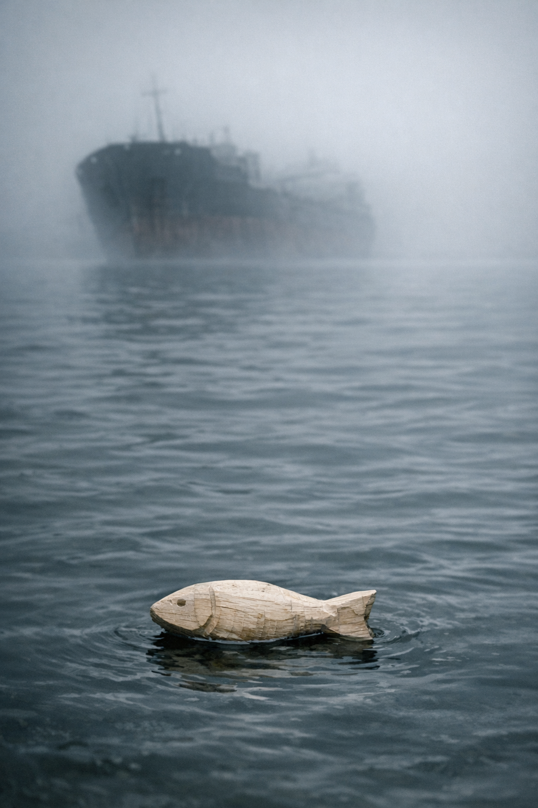

Everyone Still Alive
Everyone Still Alive
The Wrong Sound
Week One · Day 1
The alarm was two short pulses.
Jesse knew the drill alarm — two long, a pause, two long — because Heron Falls High ran the lockdown drill every October and he’d stood in the parking lot nine times in two years watching Coach Briggs count rows. Two short was not that. Two short was on the laminated card inside the classroom door that nobody read.
He was in geometry, second period. Mr. Haas had his back to the class, chalking out a theorem. The alarm went off and he kept chalking. Jesse watched him write the rest of the line.
Then the PA clicked on.
Students and staff, please—
That was it. Principal Warburg’s voice, and then nothing. Not a pause. A cut, like a cord yanked from the wall.
Three seats up and one over, Amara was already standing. Her backpack was over one shoulder. She was looking at Jesse.
He stood up.
They went out the door before Haas turned around.
The hallway was filling. Kids from the rooms along the corridor, some moving slow, some fast, most of them with their phones out. Jesse checked his: three bars, no service. He tried his mother. Nothing. He put the phone back in his pocket.
“Up,” Amara said.
She was looking toward the north stairwell, but also toward the far end of the hall — past the lockers, past the trophy case, past the gym wing door.
Jesse looked too.
Something was there. Moving fast. Wrong-fast, a side-tilting speed, a gait that went at an angle people didn’t go at. The shape of it in the fluorescent light was person-shaped and not.
The corridor smelled of copper and heat.
His legs were already moving.
“Run,” he said, and Amara was already ahead of him.
They hit the north stairwell door and went through. Behind them came others — six kids who had been in the hallway and had seen something. They came through the door without being asked.
From below: a sound that wasn’t feet. Faster than feet, and wrong in the same way — too regular, too fast, a cadence that didn’t belong to anything a body did voluntarily. It came up from the basement or the first floor.
Up. Not down.
The substitute from room 211 made it last. Jesse had first seen her that morning. She came through the door, turned, pulled it shut, held it until the latch seated. She let go and looked up at Jesse on the landing.
“Third floor,” he said. “Art room.”
He didn’t know why the art room. He’d been in it once, for an assembly that got redirected when the gym was being repainted. He remembered the door. It was thick.
The art room: wide windows, north-facing, overlooking the parking lot. Worktables with dried projects nobody was coming back for. An institutional door with mesh set in the glass, the kind that sealed when it shut.
The substitute was moving stools before the last person made it inside. She wedged one under the door handle and grabbed another. Her hands had a fine shake to them but she kept working.
Jesse moved beside her because his hands needed to be doing something.
They got four stools braced under the handle. Two of the others helped Jesse push the nearest worktable against the stack — heavy, particle-board, loaded with paint-stained cups and a drying rack that clattered when the table moved. When it was done Jesse stepped back and looked at the barricade.
He counted: himself, Amara, the six from the stairwell, the substitute. Nine.
Through the windows, Heron Falls was ordinary. Parking lot below: a few cars, yellow lot lines, October leaves down, the pavement pale and cold in the morning light. At the far edge of the lot, the water tower — HERON FALLS in dark letters on green, letters Jesse had looked at for two years and was reading for the first time right now. Three blocks east, in the direction of the hospital, a continuous siren: not an ambulance, something fixed and electronic and unmanned, going on and on without anyone answering it.
One car in the lot had its driver’s door standing open.
No driver anywhere near it.
One of the girls asked if anyone had service. Nobody did.
From below, sounds.
It went on for maybe twenty seconds. Then it stopped.
Silence.
Then from one floor down: a single heavy impact against something that didn’t give. Then quiet.
Then, from two floors below: Coach Briggs.
Jesse knew that voice from gym and from track. One tone: comply, and now. Through two floors of concrete the words didn’t reach them, just the tone. Level. Specific. Briggs was giving orders. He sounded like someone who believed they would work.
The substitute had crossed to the wall phone by the door. She picked up the handset and pressed the main office extension and waited. Pressed again. She tried the room-to-room frequency: static. She set the handset back.
“Intercom only,” she said. “First floor. No answer.”
“What about 911,” someone said.
“I tried it in the hallway. Nothing went through.”
“My phone says 911 still works without—”
“Nothing went through,” Jesse said.
The school went quiet.
The hospital siren kept going. Someone’s stomach made noise. Two people laughed — short, startled — and went quiet.
Some amount of time passed.
Jesse counted heads twice more and got nine both times. He stood near the barricade. The door stayed still. Outside the windows, Heron Falls stayed ordinary. The car with the open door. The water tower. The siren, going on and on.
Then the stairwell.
Not from below. From here — from the third floor, from the stairwell adjacent to the art room. Something was moving in the hallway now. Not walking, not running. Doing what it did. Jesse had not heard it come up the stairs. He only heard it arrive.
He put his hands on the worktable.
One of the others was already there beside him.
The sound in the hallway stopped.
Quiet.
Then: one movement close to the door. Something that had come to the art room and stopped. The quality of a thing that was now listening.
Jesse didn’t breathe.
Amara stepped to the table and put both hands flat on the surface. She was looking at the door and not at Jesse.
The handle moved.
Slowly — all the way down, testing the resistance of the stools. Back to center. Down again, and faster, and faster after that — a rapid back-and-forth that was not panic, not desperation, not anything Jesse had a word for.
It stopped.
Jesse’s hands were on the table. The grain of the wood under his palms. Outside the windows: Heron Falls, ordinary. The hospital siren. The car with the open door.
Against the other side of the door — or maybe it was his own pulse, loud enough now to be confused with something outside himself — something held still.
He did not move.
Amara did not move.
In the room behind them, nine people held still and said nothing.
Amara’s Door
Week One · Day 1
The handle had not moved in two hours.
Jesse had watched it that whole time — from the worktable at first, pressed against it with his hands flat on the surface, and then from the floor once standing stopped making sense. The stools were still braced under the handle. The mesh in the glass showed the empty corridor.
He put his eyes on the broken stool instead.
It was in the corner, leaned against the supply closet door. One leg was cracked — not all the way through, but enough, the break running pale and fibrous along the grain. A splinter of pale wood jutted from the crack, two inches maybe, the shape of something narrow and curved if you looked at it right. Jesse had been looking at it since the first hour without touching it and without knowing why.
The room had arranged itself. The substitute sat at the nearest worktable with her forehead down on her crossed arms, face down, not sleeping — her shoulders were too stiff for sleep. Two of the others sat against the wall below the windows, knees pulled up. One had found a roll of masking tape and was folding the end back against itself over and over, the same crease. Two more sat near the back without talking. One had his eyes closed.
The light through the windows had shifted. Higher now, flatter, coming in almost level instead of at an angle. The parking lot was still the parking lot: the car with the driver’s door standing open, the water tower with HERON FALLS across it, the pavement pale and cold. A few leaves had come down while they’d been in here. They lay on the asphalt. Orange. Rust. Not moving.
The hospital siren had stopped. Jesse hadn’t noticed when.
He counted heads. Seven. Counted again. Plus himself, plus Amara. Nine.
Amara was at the back of the room. Near the wall that faced the corridor. Her head was tilted. Listening to something Jesse wasn’t listening to.
Some time passed.
The substitute lifted her head and tried the wall phone. First floor, no answer. She set the handset back without saying anything.
Someone asked what they were going to do.
Nobody answered.
Jesse looked at the broken stool. He looked at the ceiling. He looked at the door.
The handle did not move.
He thought: two hours and nothing has tried it. That could mean the floor is clear. He didn’t let himself decide it was true.
He looked at the stool. The splinter was very pale against the darker grain, almost white, two inches of raw wood.
A stomach made noise. Two people laughed, startled, and stopped. It went quiet again.
The sound started at the far end of the corridor.
Jesse heard it before he knew what it was. It was not the other sound. Not the fast cadence, the too-quick, the rhythm that had come up the stairs from below — the rhythm that belonged to nothing voluntary. This was slower. Quieter. It came through the wall in waves, going in and out, like it had been going for a long time.
It took him a full second to place it.
Crying. The kind that had been going on for a while. Not hysteria — not fresh, not new. This was what came after. The breathing underneath, ragged and thin, the sound of someone who had run out of energy and kept going because they didn’t know how to stop. And underneath that, at intervals, something hitting the far stairwell door — slow, flat, almost patient. An open palm, or a fist with nothing left in it.
Amara had already turned toward the wall.
“Someone’s out there,” she said.
Jesse said: “Don’t.”
He didn’t stand up. He stayed on the floor with his back against the barricade and said it clearly. The crying continued.
The substitute raised her head. “We can’t know what it is.”
“That’s a person,” Amara said.
“It might sound—”
“That’s a person crying,” Amara said. “That’s what that is.”
His body had turned in the second-floor hallway before his brain caught the shape in the corridor, and it was like that now. He knew “don’t” was the only thing he had. He knew it wouldn’t stop her. She looked at him for one second and he saw that she knew it too.
“Amara.” One more time.
She was already moving. She pulled the worktable back from the barricade and got two stools clear of the handle — smooth, no hesitation, like she’d worked out the sequence hours ago — and pushed the door open.
Jesse stood up.
The corridor was long and dim and empty.
The overhead lights ran the full length of it. One near the far end was flickering, slow and irregular, the shadow of the trophy case jumping with it. Grey lockers. Grey floor. Jesse had run through this corridor two hours ago and it had been full of people. Now it was not.
The stairwell door was at the far end.
Jesse caught up to Amara there. He put his hand on her arm. She looked at him — sideways, fast — and in that look was everything he’d said and everything she knew and neither of them changed anything for the other.
The crying was on the other side of the door. Very close now. Thin. Almost finished.
He let go of her arm.
She opened the door.
The landing: grey cinderblock, the metal handrail, the stairs going up and going down.
At the base of the far wall: a shape. Dark hair. Knees pulled up. The position of someone who had been sitting there a long time. It might have been a girl. It was very still.
The crying had stopped when the door opened.
A second. Just that: the landing, the shape, the silence.
Then the stairwell was loud.
From above. Coming down fast. The wrong sound — the too-fast, the cadence Jesse had heard before, the one that wasn’t voluntary, the one that belonged to something that had found the stairs and was using them. It was above them and it was getting close and the door was open.
Jesse grabbed Amara’s arm.
He ran. He had her and then he didn’t — something wrong in the motion, he didn’t know what, his hand closed on nothing — and he was running, pulling someone else’s wrist, and a second person slammed into him from behind and he kept going.
The corridor. The flickering light. The trophy case. His footsteps and two others.
The art room door. Closed.
The substitute’s face through the mesh glass, and a student behind her, both of them pressed against the door, holding it. Jesse hit the glass flat-handed.
The door opened.
He went through.
He looked back.
The corridor was not empty.
He saw what he saw, and the door shut, and he stood with his back to the mesh glass while the substitute and the student pressed against it from inside. He held the door.
Amara was not there.
He had two people. The ones he’d come back with. Not Amara. He held that fact and he held the door.
The sounds in the corridor were getting specific.
The art room could not hold. The stairwell door was open and the corridor had what it had now. Jesse could hear it through the wall. He didn’t need to look.
He looked at the supply closet.
The broken stool was still leaned against it, the pale splinter jutting from the cracked leg. Jesse moved the stool aside and opened the closet door.
Paint cans on the metal shelves. Canvas rolls against the back wall. The smell of turpentine and old clay, sharp as the door opened. The space was four feet wide. Maybe five.
“In here,” he said. Not loud.
The two he’d come back with came in. He reached back and got one more — a kid close enough to reach, a face he half-knew — and pulled the door shut behind him.
Dark.
Jesse put his back against the door. Through the door, through the wall: the sounds were specific and close and he did not catalog them. He counted instead.
One. Two. Three. Himself.
Four.
He didn’t count again.
A phone screen lit up in the dark. The kid he’d reached for had it out, brightness turned all the way down, just the faint glow of it on the ceiling and on the backs of their hands. At the top of the screen the battery indicator read:
3%.
Jesse held the door shut and did not say anything.
He did not say her name.
The Night and the Names
Week One · Day 1 night through Day 2 predawn
The floor was cold through his jeans. The back of the door was cold through his jacket. The closet was tight around them — paint cans on both sides close enough to touch, canvas rolls against the back wall, the smell of turpentine and old clay.
Jesse listened.
Four of them in four feet of space. The girl with the phone had it face-down on her knee, brightness all the way off, just the faint glow of the indicator light showing through the plastic case. The boy in the yellow jacket sat against the shelves with his knees folded up and his eyes closed — not sleeping, just closed. The third hadn’t said his name. Jesse had reached into the dark and grabbed what he’d grabbed and this was what he had.
From outside the door: nothing.
That hadn’t been true an hour ago. An hour ago there had been sounds in the art room — the wrong-rhythmed, too-fast cadence Jesse recognized, and then other movements, slower and less directed, and then nothing at all.
He decided the silence was good. He wasn’t sure it was. He decided anyway.
He’d dragged the broken stool in before pulling the door shut. It was in the corner now, leaned against the far shelf, the cracked leg angled up with the pale wood showing where the grain had split. A two-inch splinter jutted from the break — narrow, slightly curved, the way wood is when the grain decides things for you.
He hadn’t been looking at it on purpose. His eyes kept finding it anyway.
He’d been looking at it since the art room. Since before that, maybe.
After a while his hand moved and he took the splinter free of the break. It came out of the crack cleanly. He reached into his pocket for the folding knife — his father’s, three years carried without much use — and opened the blade.
His hands started moving.
Not toward anything. Just moving.
The night got longer. Yellow jacket boy’s head dropped once and came back up. The unnamed boy slept for real eventually — Jesse could tell by the shift in his breathing, the way it slowed. The girl stayed awake and watched Jesse’s hands without asking what he was doing.
The cold worked through the floor a degree at a time. Jesse adjusted his grip on the knife so his fingers wouldn’t stiffen.
From outside: the art room had gone quiet and the quiet was different now. Less like something paused on the other side of a wall. Jesse didn’t know if he trusted the difference. He kept his back against the door and kept the blade moving.
The wood came away in thin curls that landed on his knee and on the floor.
At some point the thing in his hands was a fish. The wood curved the way it curved and the taper at one end became a tail. Palm-sized. One faint line along the side that might have been an eye.
He ran his thumb along the length of it.
He knew what it was for. He didn’t think about that.
His hands went still.
The phone screen lit.
The girl had it face-up suddenly, angled toward Jesse. Battery: 1%. And in the top corner of the screen, one bar.
She had a radio app open. Jesse didn’t know when she’d been checking for signal. She turned the volume up and held the phone between them.
A voice came out of the speaker — low and steady, almost too low to hear.
It was reading names.
Not emergency instructions. Not a weather broadcast or shelter coordinates. Names — one at a time, with a breath between each. The voice had no particular gender. It was the kind of voice he couldn’t place.
Michael Voss.
Renata Poole.
Yellow jacket boy had his eyes open. The unnamed one had come awake without Jesse noticing — elbows on knees, head forward, listening.
Carla Tran. Antoine Reyes.
Jesse didn’t recognize any of them. He looked at the others to see if they did. Nobody moved.
Simone Hendricks.
The voice kept the same space between names, the same quiet. It had been doing this for a long time, Jesse thought. It would keep doing it.
Diane Var—
The screen went black.
Not a dim. Just off. Signal and battery and voice, all of it, in one instant. The name stopped where it stopped.
None of them moved for a moment.
The dark was back. The cold was there. Outside the door: nothing. Just the four of them and the silence the voice had been filling.
Jesse held the fish.
Some time after that he went through what he knew.
Three people with him. One way in and out of the closet.
The school had four stories. They were on the third. Below them: second floor, first floor, basement.
The basement had the cafeteria. Near the cafeteria was the service exit. The loading dock was on the south side of the building. You could get out through the loading dock.
The south stairwell ran from the third floor to the basement without crossing the parts of the corridor that had been compromised. Jesse hadn’t heard anything from the south end of the building in hours.
He worked the route. Forward, then backward. There were gaps he couldn’t see from here — the second floor, the lower stairwell. He worked around those parts. He kept the facts and stopped where the guessing started.
While he was doing this a voice came up through the floor.
Not the wrong cadence. A person’s voice. Low and deliberate, the rhythm of someone giving instructions to someone else. Jesse held still and listened for the words inside it. The building took the words and left only the shape — a man’s voice, steady, the pace of someone who expected to be heard.
Coach Briggs.
The voice ran for maybe forty seconds. Then it stopped.
Jesse filed it. Briggs was alive. Briggs was in the basement. Briggs was giving orders to someone.
The cafeteria was in the basement. The loading dock was near the cafeteria.
He filed that too.
The dark under the door had shifted.
Not light — not yet. Just less dark, grey coming in from the windows at both ends of the corridor.
Jesse got to his feet. His legs had stiffened from the cold. He steadied himself on the nearest shelf and straightened slowly.
The others were watching him.
“South stairwell,” he said. Quiet and level. “Basement. Service exit. Before the building starts to warm up.”
He didn’t have evidence for the warm-up logic.
Nobody asked him to.
The girl slipped the dead phone into her jacket pocket. The unnamed boy stood and moved to give Jesse room. The girl said something — a name, one of their names, one short word — and yellow jacket boy got up.
Jesse had the fish in his hand. He didn’t put it away. He put his other hand on the door handle.
He opened the door.
The corridor: long and grey-lit from both ends, the windows beginning to pale. Lockers. Ceiling. The trophy case at the far end catching the first light.
Nothing moving.
Jesse stepped half out, slow. Listened.
Still.
He turned his head left, toward the south stairwell, twenty feet or close to it.
There was a sound.
Not the wrong-fast. Not the too-quick rhythm. This was slower — an uneven shuffle, something moving without direction, back and forth or nearly so, the way something moves when it has been in one place a long time and doesn’t know it has stopped going anywhere. To his left. Maybe twenty feet. Maybe less.
Jesse didn’t close the door.
He stood in the frame and waited.
The sound stayed where it was.
He had a splinter of wood in his hand that was almost a fish.
Out
Week One · Day 2, predawn through early morning
The thing in the corridor was alone.
Jesse watched it through the gap in the art room door — one shape, maybe twenty feet south, moving without direction. Not the wrong-fast. This was slower: the back-and-forth of something that had been in one place a long time, with no direction left in it. A sideways tilt in the gait that he recognized. But the speed was wrong for tracking. Not hunting. Just moving.
He waited.
The cold had been in his feet since the closet. He stood in the door gap and counted — not seconds, just counts — and watched the shape complete its slow arc and begin again.
Still alone. Still not coming this way.
He eased back into the art room and turned.
Three faces in the grey-coming light. The girl. Yellow jacket. The unnamed one. Jesse held up one finger. He pointed south. He pointed at himself, then at them, once each. South again.
The girl gave one nod. The unnamed boy got up from the floor without a sound. Yellow jacket was already on his feet.
Jesse turned to the door.
They moved.
Fast, single file, Jesse at the front. No talking. His hand was up behind him and he had the fish in his other hand. The shape was at the far end, turned away from them, and they were past the art room door and past the trophy case before it shifted.
The south stairwell.
Jesse pushed the door open and held it. Three through, then he went in after them and let it close without a sound.
Dark in the stairwell. He went down.
At the second-floor landing he put his hand flat on the door and stopped. Sounds from the corridor beyond — the wrong-rhythmed cadence, somewhere back in the second-floor hallway, not moving this direction. He pulled his hand back. He looked at the three of them and shook his head once.
They kept going.
At the first floor he stopped again. The door opened onto the corridor that ran toward the cafeteria. He put his ear to the door and listened.
Nothing.
Not the wrong cadence. Not anything. He pushed it open an inch and looked. The double doors at the far end of the cafeteria hallway were closed. Last night Coach Briggs had been down here — Jesse had heard him, voice rising through the floor, giving instructions. Jesse looked at the closed cafeteria doors for one second.
He turned away from them. He didn’t go toward them.
The basement stairs.
The smell changed on the way down.
Not copper. That was the upper floors, that heat-and-metal. This was colder — standing water and concrete dust and the under-side of a building that didn’t see air. Jesse had been down here twice. Once on a dare in ninth grade. Once because he’d cut gym by coming in through the loading dock on the south end of the building. He’d come up the basement stairs and through the first-floor corridor and slipped into the bathroom before anyone saw him.
He knew the way.
The corridor was narrower down here, the ceiling lower, bare pipes overhead. One fluorescent tube that had been dark long enough to collect dust along its length. At the far end: a metal rack against the right wall with winter coats on hooks. Beside the rack, a plank shelf on two brackets. A can of soup. A first-aid kit with a red cross on the lid. A flashlight.
Jesse picked up the flashlight. He clicked the button.
Nothing.
He set it back down.
The push bar was right in front of him.
He stopped.
He was holding the fish.
He had been holding it through the corridor, through two flights of stairs, through the whole descent without once noticing. His hand had been around it since the closet, since before the closet, all night without putting it down. It was palm-sized and smooth and he looked at it.
They were moving too fast. He had nothing to carry it in. The next part needed both hands.
He reached across to the rack and slid the fish into the pocket of the nearest coat. A grey wool peacoat, heavy, somebody’s good winter coat. The pocket took it and he felt it settle.
He didn’t look at the coat. He didn’t look at the pocket.
He wrapped both hands around the push bar.
The bar moved. The door swung open.
Cold — real October cold off the pavement, off the grey sky.
“Go,” he said.
They went. The girl first, yellow jacket, the unnamed one. Jesse watched them clear the threshold. He came through last and let the door swing shut behind him.
The parking lot. The sky above the treeline was beginning to pale at the edges — not light yet, but the suggestion of it, something returning that had seemed like it might not. East toward the hospital, the air was still. No sirens.
He ran.
They were already going. He caught up. The pavement was hard and cold through the soles of his sneakers and he kept his eyes forward. The water tower of Heron Falls rose above the treeline to the north, its dark shape against the lightening sky.
He kept running.
At the far end of the lot, the chain-link fence had a gap near the corner post. Jesse knew it. He went through first this time and turned and held the fence back and the three of them came through one after another, onto the sidewalk.
He turned south.
He didn’t look back at the building.
He ran to the first corner and turned. One block. Another. The houses were set back from the road and all of them still, every window dark or beginning to pale with the grey morning. A car at the curb with both windows down. Leaves on the pavement, yellowing, wet.
Jesse stopped.
He put his hands on his knees and breathed.
Behind him, they stopped.
Once. Twice. He straightened.
The street was empty and quiet. The grey morning light was filling in the shapes of things — houses, fence lines, the parked car’s outline, the trees. He turned and looked at the three students behind him.
He counted.
Three.
He didn’t say Amara’s name.
He didn’t think it yet.
He turned south.
He started walking.
After a moment, they followed.
The Notebook
Month Two.
The morning count: one fuel tanker, three-quarters full, parked in the eastern approach lane behind the second Jersey barrier. Four barriers total, staggered across the approach — Pruett had explained the stagger in the second week, something about vehicle approach angles, and Selle had noted it in the operational section at the front of the green spiral notebook. One plywood kiosk between the second and third barriers, a window cut on each facing side, a scrap of overhang for roof. One surplus tent behind the kiosk, zipper repaired with a safety pin. One folding cot inside the tent, two camp chairs, a camp table, a propane heater. One CB radio on the camp table. The count was the same every morning. It had been the same for three weeks.
Selle wrote it down.
The notebook had two sections, divided by a strip of red electrical tape Pruett had pressed to the spiral binding. The front portion — the larger, perhaps two-thirds of the pages — belonged to Pruett: the operational notes, the checkpoint guidelines, the daily summaries he added in block capitals at the end of each shift. The back portion was Selle’s: shift logs, one page per day, each entry dated in the upper right corner and signed at the bottom. The cover of the notebook was green. The spiral was silver. It had been found in the bed of an abandoned truck on the bridge itself in the first week, along with a sleeping bag and three cans of corn and a rain jacket, and Pruett had taken it because it was the right size and had enough blank pages.
The morning was cold. The river was below and he could smell it from the kiosk window — cold water and cold mud and ice forming where the current slowed at the downstream bends. November. It was the second of November, or thereabouts; he had lost the specific date in the first weeks but had been tracking carefully since he started the shift logs, and his estimate was within a day. The sandbags stacked at the base of the kiosk had REGIONAL TRANSIT CONTROL, HWY 9 stenciled on them in black letters. Pruett used this designation in his daily summaries. Selle used “the Narrows” in his own entries.
He finished the count and stood in the kiosk doorway and looked east. The road came down from a slight grade, tree lines on both sides bare and grey, nothing moving. He went back to the notebook.
The rules were written in Pruett’s block hand on the sixth page of the front section, following five pages of orientation notes. They were five numbered items:
1. Travelers must state their origin and destination. 2. Travelers must present their hands for inspection, palms up. 3. Travelers must show no visible wound or fever exceeding 38.5 degrees Celsius. 4. Travelers may carry provisions for no more than three days. 5. Groups of unrelated travelers may not exceed eight persons.
Selle knew them. He had helped write them, in the sense that Pruett had read each rule aloud, in Week Three when it was decided the rules needed to be written rather than only spoken, and Selle had been the one listening. Selle had suggested three adjustments to the wording. Pruett had accepted two. The third — whether the three-day provision rule applied to families traveling together — had produced a discussion that went the better part of an hour and ended with Pruett writing a note below the numbered items: Families: use judgment. Selle had looked at this note for a long time after Pruett set down the pen. He had not suggested further revision.
He read the rules now not because he needed reminding but because the shift log template had a line — Checkpoint procedure reviewed: Y/N — and because reading them was part of beginning a shift properly, the same way counting the vehicles was. A procedure did not need to be uncertain to require confirming.
He wrote Y in the box and moved to the next line.
Pruett arrived at 0800.
He came across from the western end of the bridge, where the watch position had the better sightline up the eastern approach, carrying two paper cups of instant coffee he’d heated on the camp stove. He handed one to Selle without preamble.
“Two tried the river overnight,” he said. “South side, downstream from the bridge supports. Hendricks saw them on the thermal around three.”
Selle had the notebook open. “Time, exactly.”
“Three-fourteen.” Pruett looked at him to confirm this was specific enough, and Selle wrote it down. “They were moving parallel to the bank. When the beam found them they stopped and turned back into the tree line. Didn’t reach the wire.”
“Both of them.”
“Both.” Pruett drank his coffee. “Hendricks logged it.”
Selle wrote: 0314 — 2 persons, south bank approach, east of bridge supports. Withdrew before wire. No contact. He dated it to the previous night’s log, initialed it, and turned to the current page.
“Anything else overnight.”
“No.” Pruett looked east, up the approach. “Should be a quiet morning. Cold’s keeping people inside.”
Selle did not say whether he thought this was true. He noted the temperature in the upper corner of the page — four degrees Celsius, his estimate — and wrote Clear, cold. Wind NNW. Then he put down the cup.
The day had begun.
The farmer came at a little past ten.
He appeared at the top of the eastern grade, alone, pushing a two-wheel utility cart loaded and roped down under a tarpaulin. He had the build of someone who had been large and had recently reduced — the jacket hung on him a little. He walked at a steady pace without stopping at distance to look at the checkpoint first, which meant either long experience of checkpoints or simple indifference, and he came down the grade and stopped at the first barrier without being asked.
“Morning,” he said.
“Good morning.” Selle had the notebook open to the crossing log. “Your origin and destination.”
“Coming from Copley. Heading west to Larkin — my sister’s place there.” He said both without hesitation, the way people said things they had decided in advance they were going to say. “Been walking three days.”
Copley (stated). Larkin (stated). Three days travel (stated). “Show me your hands.”
The man stripped off his gloves and held both hands out, palms up. The skin was chapped, the knuckles raw from the cold, no wounds, no discoloration past what the weather accounted for. Selle looked at them for the appropriate time.
“Supplies.”
The man turned the cart slightly. Under the tarpaulin: a sleeping bag compressed and lashed, four cans, a folding entrenching tool in its sleeve, a change of clothing rolled tight, a water container. Selle scanned it in the way Pruett had shown him — not searching for anything contraband so much as estimating weight, looking for what was missing and what was surplus. The load was appropriate. Three days, possibly four with rationing.
“Any fever or illness.”
“No.”
“Traveling alone.”
“Yes.”
Selle held out the thermometer — infrared, handheld, designed to read from four centimeters at the forehead — and the man leaned forward without being asked. The reading came up: 36.8. He went to the back of the kiosk and knocked twice on the support post.
Pruett appeared from the tent entrance. Selle said: “One. Copley to Larkin, three days travel, three-day supply, no fever, no wounds. Solo.”
Pruett studied the man for a moment across the barrier distance. Then: “Pass him.”
Selle opened the near barrier on its pivot. The man pushed his cart through without further comment, though he nodded once at Pruett as he passed, and Pruett nodded back. Selle watched him go until he was over the far end of the bridge and his shape had diminished into the western tree line, because the rules specified that approved crossings should be observed until the traveler was out of sight.
The crossing log:
1024 — W-bound. Origin: Copley. Dest: Larkin. Male, approx. 45, solo. Temp: 36.8. Supply: 3 days. Approved. (Sig: Pruett.)
Selle signed beneath and closed back to his page marker.
The afternoon brought two more.
The first came at half past one: a woman on a bicycle, which was unusual. Most people were on foot by now, and a bicycle suggested someone who had held onto it, which meant a short departure distance or a very specific kind of luck. She stopped at the barrier and put both feet down and waited.
“Origin and destination.”
“I’m coming from Dawes Road, my mother’s house, southeast of here.” She had a measured, careful way of speaking, as though she had rehearsed not the words themselves but the manner of saying them. “I’m going to Minna. I have an address there.” She produced a piece of folded paper before he asked and held it out.
Selle looked at the address, wrote it in the log, and handed the paper back. She showed her hands: clean, uninjured, trembling slightly — cold or nerves, which he did not distinguish in the entry. Temperature 36.4. Two days’ supply in the pannier bags, which she opened for him without being asked.
“Traveling alone.”
“Yes.”
Pruett, from the tent entrance: “Pass her.”
She was over the bridge in five minutes.
1332 — W-bound. Origin: Dawes Rd, SE. Dest: Minna. Female, approx. 35, bicycle, solo. Temp: 36.4. Supply: 2 days. Approved. (Sig: Pruett.)
The second came at three forty.
He was young — early twenties, possibly less. He was carrying an expedition frame-pack with additional bags roped to the outside and a sleeping pad lashed below and a bundle in dark plastic that Selle could not identify from the kiosk. He stopped well short of the first barrier and stood there without approaching until Selle came around.
“You need to come up to the barrier,” Selle said.
The man came forward. He moved carefully, which might have been the weight.
“Origin and destination.”
The man looked at him. “I’m heading west.”
“Your origin. Where are you coming from.”
He shifted the pack’s weight from one shoulder. “East. I’ve been east.”
Selle looked at the notebook. “I need a specific point of origin.”
“I don’t —” The man’s jaw tightened briefly. “I don’t have a name for the specific point. I came from wherever I came from. I’m trying to get west.”
“Where west.”
“Does it matter.”
“It goes in the log,” Selle said. “Yes.”
The man said nothing. He was looking at the kiosk, at the tanker beyond the barrier, at the point somewhere past the checkpoint and the bridge and the western tree line.
“Show me your hands,” Selle said.
The man’s hands were at his sides. He did not move them.
Pruett had come out from the tent and was standing beside Selle. He said, evenly: “Show him your hands.”
“I’m fine,” the man said. His voice had something in it — not aggression, or not only aggression; something worn down by a long time in a situation with no resolution. “I haven’t done anything. I’m not sick. I’m just trying to get across.”
“I know,” Pruett said. “I understand that. Show me your hands and we can talk about what’s next.”
The man looked at the notebook in Selle’s hands. At the pen.
“You write down what I look like,” he said.
“We log crossings,” Selle said.
“But you write it down. What I look like. Where I said I was coming from.”
There was a pause.
“Denials are logged the same as crossings,” Selle said. “It goes in the book either way.”
The man stood for another moment. Then: “I can’t show you my hands.”
Pruett said: “Can’t, or won’t.”
“Can’t.” He looked away, then back. “I want to be clear — I’m not sick. I’m not. But I can’t show you my hands.”
“Then I can’t let you cross,” Pruett said.
The man argued for four minutes — Selle tracked it by his watch, not deliberately. He did not raise his voice. He did not threaten. He said he had been walking a long time. He said there was nothing in the east worth going back to. He said the hands weren’t the issue, that Pruett could see he was fine, that this was not what the rule was for. Pruett was patient. He said he understood. He said he was sorry. He said the rules were the rules, and they were posted — he pointed at the laminated copy of the five rules taped to the east-facing window of the kiosk at eye height — and the man had known them before he reached the barrier. The man looked at the laminated sheet. He looked at Pruett.
He turned and went back up the eastern grade without looking back.
Selle watched him until he went over the top and out of sight, which the rules required. Then he went inside the kiosk.
The reasons for the man’s refusal were: a wound of some kind, infected or not, that he believed would trigger automatic denial. Something else about the hands that carried a different risk — legal, situational, more complicated than a wound. Fear of the checkpoint’s documentation, for reasons he hadn’t named and had not been asked about. A long time in a difficult situation that had made the routine gesture of showing one’s palms feel like exposure. Selle arranged these in his head without any of them rising to the top. Any of them could be true. More than one could be. He did not rank them in the notebook because the notebook had no place for that kind of entry — only the facts that were established, not the facts that were possible.
He wrote the entry:
1540 — W-bound. Origin: unknown (refused). Dest: unknown (refused). Male, approx. 20-25, solo. Temp: not taken. Supply: excess. Declined to present hands. Turned back. (Sig: Pruett.)
He looked at the last line. Then he drew a single underline beneath Declined to present hands.
The template didn’t have a place for underlining. It was his own addition. He did not know why he’d done it. He left it underlined and moved to the next page.
The temperature dropped after four. Selle and Pruett ate in the tent — canned beans heated on the camp stove, something that had been bread some time ago and was now a specific texture without a more precise name. The propane heater made its ticking sound as the metal expanded and settled.
Pruett said: “You understand why we hold this position.”
It was not a new analysis. Pruett had covered this ground before — in the third week, the fifth week, sometimes in the early mornings when there was nothing on the approach yet — and Selle had listened each time as though it were new, because listening as though it were new was what Pruett needed from him.
“The man at three forty,” Selle said.
Pruett was quiet for a moment, waiting.
“His hands. There could be a reason that doesn’t mean what the rule assumes it means.”
“There could be several reasons,” Pruett said.
“I know.”
“That’s exactly it.” Pruett set down his cup. “It could mean several things, and we have no way of knowing which. What we have is the rule, and the rule exists because of what it covers when it applies. If it didn’t need to cover anything, we wouldn’t need the rule.” He paused. “He knew the rules. They’re posted. He made a choice.”
“Yes.”
“That’s all we know,” Pruett said.
Selle did not disagree. He drank the last of his coffee, which had gone cold.
He made the end-of-shift entry at seven in the evening by the light of the battery lantern. One page, his standard format.
Day: 2 November (est.). Shift: Selle. Weather: clear, cold, temp falling, NNW wind, 4°C est. at 0800. CB radio check: 1800, intermittent signal, no traffic received.
Overnight (previous shift): 0314 — 2 persons, south bank, E of bridge supports. Withdrew before wire. No contact. (Watcher: Hendricks.)
Crossings: 2 approved. 1 denied.
1024 — Copley to Larkin. M approx. 45, solo. Temp 36.8. 3-day supply. Approved. 1332 — Dawes Rd to Minna. F approx. 35, bicycle, solo. Temp 36.4. 2-day supply. Approved. 1540 — Origin/dest refused. M approx. 20-25, solo. Temp not taken. Excess supply. Declined to present hands. Turned back.
Equipment: tanker, kiosk, barriers x4, tent, heater, CB — all present and accounted for.
Notes: none.
Signature: D. Selle, Pvt.
He signed it. He put down the pen.
Outside, the river was audible in the cold — not the water itself, which was quiet at this hour, but the sound of the ice at the margins, the faint creak and press of it forming against the bridge’s lower pilings. The propane heater ticked as the metal contracted, the temperature inside the tent falling now toward the temperature outside. He could hear the bridge cable in the wind, a low drone that came and went.
Selle looked at the entry. He looked at the underlined line in the three-forty crossing, visible at the top of the page behind his current entry if he turned back to it.
He did not turn back to it.
He closed the notebook.
There was nothing in it that had told him anything was wrong.
Criteria
Month Two.
Devlin was still writing when Selle arrived. He had the night log open on the camp table with his gloves on, the letters coming out wider than they needed to be — legible, but large. He did not look up.
“Three overnight,” Devlin said. He kept writing. “First two at the south bank again, around 0200. Came parallel to the bank — Hendricks had them on the thermal, pulled back before the wire, no contact. Third at half three, on the bridge deck itself, west end. I don’t know how he got past the watch position. Hendricks flagged it by radio and by the time I was out, he’d already gone back east into the trees.”
He turned the log to show Selle the entries. Selle looked at them: three lines, all in Devlin’s hand, the sevens crossed the way Devlin’s sevens always were.
“Anything else,” Selle said.
“Propane heater’s on the last tank.” Devlin capped the pen and slid it into his coat pocket. “Pruett knows. Has since last night.”
“I’ll note it.”
He made the note in the equipment section and drew a small box around it so it would read as a distinct flag rather than a standard item. Devlin picked up his water bottle from the camp table, buttoned his coat, and left. The kiosk was quiet.
Selle stood in the doorway for a moment, looking east. The morning was overcast — a low ceiling with no gap in it, the kind of grey that sat on the treeline rather than above it. The road down from the eastern grade was empty. He looked at the bridge cables and the bridge deck and below that, through the kiosk side window, the dark water. The Ashford River was moving fast today; at the near piling, he could see the ice forming in flat plates that shifted against each other in the current. The sound of it was continuous. It was heavier ice than last week.
He went inside and opened the notebook to the day’s log page. He noted the date — eighth of November, by his running count, or within a day of it — the temperature at 0800 (three degrees Celsius, his estimate), the wind direction (NNW again), and the CB radio check due at 1800. He filled in what he had and left the rest of the template for later.
The morning had begun.
The first crossing of the shift came at half past nine.
Three of them: a woman and a teenager first, pushing a frame-cart loaded with bedrolls and canvas bags, and behind them an older man who held his left arm close to his side and walked at a careful pace. They came down the eastern grade without stopping to look at the checkpoint from a distance. The woman came first to the barrier.
“Destination,” Selle said.
“Caraway.” She said it without hesitation. “We have family there — my husband’s brother. His family.” She glanced at the laminated rules taped to the east-facing window of the kiosk, then back at him. “We’ve been walking three days.”
“Show me your hands.” He addressed the teenager first. The boy put down the cart and stripped off his work gloves: both palms out, clean, one old scab healed over the left forefinger, nothing that was recent. He nodded and moved to the woman. Her hands were unremarkable. Then he turned to the older man.
“His left arm,” the woman said, and she said it quickly, in the way of something decided in advance. “He has trouble raising it. Farm equipment — three or four years ago, before everything. It’s an old injury. He’s had it since before.”
Selle looked at the older man. He was past seventy — possibly further; his face had the settled quality of someone who had been managing a long-term condition carefully and had stopped expecting it to change. His right arm came up without difficulty. The left came to shoulder height and stopped.
“I’ll need to see the arm,” Selle said.
The older man looked at the woman — daughter-in-law, Selle noted, or close — and began working his jacket off the left shoulder. The sleeve underneath was flannel, and it was clear that dressing and undressing required a particular patience that this man had developed over years. Selle waited.
He came around the barrier — permitted during physical inspections, under Pruett’s standing guidance — and held the sleeve at the elbow while the man turned the arm. The shoulder joint was enlarged. The skin around it showed old striations: a deep injury, healed, of the kind that a machine made rather than a tool. The skin was dry. He leaned close enough to confirm what confirmation required and there was nothing to indicate he should continue the inspection further. The arm was old. The injury was old.
He helped the man work the sleeve back down.
Temperatures: 36.6 for the woman. 36.9 for the teenager. 36.4 for the older man.
He went to the kiosk and knocked twice on the support post. Pruett came out from the tent.
“Three,” Selle said, keeping his voice level and directed at Pruett rather than at the family. “Woman, teenager, elderly man — her father-in-law, appears to be. Caraway, family destination, three days walking from the east. Three-day supply estimate. Normal temperatures across all three. The grandfather has limited range in the left shoulder — healed injury, non-recent, farm equipment per family attestation. No wound visible on inspection. No fever. No secondary indicators.”
Pruett looked at the three of them at the second barrier. They had stopped without being asked and were waiting without speaking. The older man was adjusting the cart’s weight with his good arm.
“Pass them,” Pruett said.
Selle opened the barrier on its pivot. The woman said thank you as she came through; he was already moving back to the kiosk when she said it but he heard it. The teenager pushed the cart over the bridge. The older man walked last, at the pace the arm required, and did not look back at the checkpoint or at either of them.
He wrote the entry:
0934 — W-bound. Origin: E. (3 days travel). Dest: Caraway. F approx. 40; M approx. 16; M approx. 70+. 3 persons. Temp: 36.6 / 36.9 / 36.4. Supply: 3 days est. Approved. NOTE: elder (M, 70+) presents w/ limited left-arm elevation — healed, non-recent (farm equip., 3–4 yrs prior, per family attest.), no wound on physical inspection, no temp elevation, no secondary indicators. Cleared on inspection. (Sig: Pruett.)
He read it back. It was accurate. The inspection had been thorough; the note documented the deviation from standard physical assessment, the basis for clearance was explicit, and the judgment had been his — ratified by Pruett — and it was the correct one. Not certain: the word correct did not mean certain in the context of this checkpoint, because certainty was not available at this checkpoint, and the rules had been written with that limitation understood. He filed it in his internal inventory in the section for decisions where the text of the rule required interpretation, and where the interpretation had been sound.
He turned to the next page.
The second crossing of the shift came at twenty past eleven.
A man alone, somewhere in the middle of his thirties, with a daypack and the road-worn quality of someone who had been walking for weeks rather than days. He came down the eastern grade with his hands visible at his sides and stopped at the first barrier without being directed to.
“Good morning,” he said.
“Good morning.” Selle had the notebook ready. “Your origin and destination.”
“Coming from Brennan.” He said this without hesitation. “Going west to Larkin, eventually. Family.”
Brennan (stated). Larkin (stated). Eventually. Selle wrote it. “Show me your hands.”
The man removed his gloves. Both palms out: chapped and dry from the road, no wounds. He showed the backs of his hands without being asked.
“Supplies.”
He opened the daypack. One sleeping bag in a dry-bag, four canned goods, a small camp stove and two fuel canisters, a change of clothing rolled and roped. Selle estimated three days, possibly under.
“Any fever or illness.”
“No,” the man said.
Then he coughed. Once, a short sound, and then a second time a moment later — a cough with depth to it, a chest cough, not the dryness of a throat thing. He pressed the back of his gloved hand to his mouth. He looked at Selle over his hand.
“The road,” he said. “Dust from the road.”
Selle held out the thermometer.
The man leaned forward. The reading came up: 38.3.
Selle looked at it. Rule three specified no visible wound or fever exceeding 38.5 degrees Celsius. 38.3 was 0.2 below that. He held the thermometer for a moment, then he went to the kiosk and knocked twice on the support post.
Pruett came out from the tent. He looked at Selle. Selle said, quietly, positioning himself so his voice carried to Pruett and not back to the man at the barrier: “One. Brennan to Larkin, family destination, three days’ supply or under. Hands clean. Temperature 38.3.” He paused. “He coughed twice during intake.”
Pruett looked at the man, who was standing with his pack settled at the first barrier, watching the bridge. He was not watching Selle or Pruett.
Pruett was quiet for a moment.
“38.3 is under the threshold,” he said. Not to Selle — working through something in the open where both of them could see it. “He’s technically under rule three.” He paused. “But the guidance in the front section — respiratory symptom combined with any elevated temperature is a secondary-review flag. Observation period required before clearing.” His jaw tightened slightly. “We don’t have an observation period. There’s no protocol for one at this position. You can’t hold someone here; we have one cot and no facility for it. You can’t send him forward without the review. There’s nothing in the middle.” He looked at the man again. The man had not moved. “There’s no middle here.”
Pruett walked to the first barrier.
“I’m going to have to ask you to turn back east,” he said.
The man looked at him. He did not look surprised. He looked at the notebook in Selle’s hands, then at the bridge, at the grey western treeline beyond the far end of the bridge. He looked at Selle.
Selle held his gaze.
The man said nothing. He buckled the daypack’s chest strap, lifted the pack by its frame, and settled it on his shoulders. He turned east. He walked up the grade at the same measured pace he had come down, without looking back, and went over the top of the grade. His shape diminished into the grey treeline and was gone.
Selle watched the grade until it was empty. Then he went inside.
He stood at the camp table with the notebook open. The man’s temperature had been 38.3. The cough had occurred twice during intake. He had stated an origin and a destination. His hands had been clean. Whether the sound of the cough had been something working through the chest, or the accumulated dust of a road that had been dry in patches despite the cold — this was not a fact he had a test for, and the notebook had no category for it. He arranged these items in their appropriate places and wrote the entry:
1121 — W-bound. Origin: Brennan. Dest: Larkin (stated). M approx. 35, solo. Temp: 38.3. Supply: approx. 3 days. Respiratory symptom (cough x2, during intake). Temp elevated but below threshold (38.5); secondary-review guidance applies; secondary review: no protocol available at this position. Turned back. (Sig: Pruett.)
He did not underline any part of the entry. He did not draw a box. He turned the page.
The third crossing came at a quarter to two.
A woman, alone. Late twenties, possibly thirty. She came down the eastern grade at a fast pace that slowed only at the first barrier, carrying a single pack and a net bag of items that knocked against each other when she walked. She put both feet flat at the barrier and waited.
“Your origin and destination,” Selle said.
“I’m coming from the Caltrough area — east of here. I’ve been walking since last week.” She said this efficiently, as someone moving through a list. “I’m going to the Wenden settlement. Roughly thirty kilometers west of here — I was told it’s there.”
Selle wrote Wenden settlement (dest.) in the log. He had not heard of Wenden. He wrote it accurately and moved to the next field.
She showed her hands without being asked: clean, no wounds, the callusing of a long carrying duration on both palms. Temperature 36.7. Two days’ supply in the pack, which she opened for him: adequate, properly estimated.
He went to the kiosk and knocked twice. From the tent entrance, without coming out: “Pass her.”
She was over the bridge in four minutes. At the near end she stopped and turned back to face the checkpoint.
“Thank you,” she said. She seemed to address this to both of them, or to the checkpoint in general; she was already walking west when she said it.
1347 — W-bound. Origin: Caltrough area. Dest: Wenden settlement. F approx. 30, solo. Temp: 36.7. Supply: 2 days. Approved. (Sig: Pruett.)
The template had no category for the thank-you. He moved to the next line.
At four o’clock Pruett came into the kiosk and stood at the camp table, reading back through the day’s crossing log from the beginning of the shift. The overcast had thickened through the afternoon; the sky and the treeline were the same grey now, without distinction. Selle was at the kiosk window, watching the eastern grade.
Pruett read the 1121 entry. He read it a second time. He set the notebook on the camp table.
“You don’t flinch,” he said. He was looking at the camp table, not at Selle. “Most people I’ve worked with, when there’s a hard call — they flinch. Doesn’t change the outcome; the rule is the rule and the call would have been the same regardless. But there’s a cost to the flinch. It’s in the room for the next hour, the next week. Things don’t file correctly. You end up working around what the flinch cost instead of doing the next thing.” He paused. “You don’t flinch. I’ve noticed it since the beginning.”
Selle watched the eastern grade.
“Other people I’ve had at the kiosk,” Pruett said, “they flinch and then there’s the management of the flinch on top of the work. It accumulates.” He picked up the notebook and moved toward the door. He stopped at the threshold. “I want you to know I’ve noticed it. That’s all.”
He went back to the tent.
Selle stood at the window for another minute. He added the comment to his internal inventory in the place where assessments arrived — items noted by Pruett or others, filed without requiring a response. He noted it and moved on to the next item, which was the CB radio check at 1800.
He did not examine whether being noted for not flinching was the same thing as being good at the work. This was a question for later, when the shift was complete and the entry was signed. He had not yet arrived at later.
The CB radio check at 1800: signal poor, intermittent, no traffic received.
He made the end-of-shift entry at half past six by the battery lantern.
Day: 8 November (est.). Shift: Selle.
Crossings: 2 approved. 1 turned back.
0934 — E. to Caraway. F/M/M (3 persons). Temps 36.6 / 36.9 / 36.4. 3-day supply est. Approved. Elder shoulder injury noted and cleared per physical inspection. 1121 — Brennan to Larkin. M, solo. Temp 38.3. Resp. symptom. Secondary review: no protocol available. Turned back. 1347 — Caltrough to Wenden settlement. F, solo. Temp 36.7. 2-day supply. Approved.
Notes: none.
Signature: D. Selle, Pvt.
He signed it. He set down the pen.
He did not think about the man with the cough. The entry was complete. The entry was accurate. The shift was over. He went to the tent.
The Fever
Month Two.
Pruett left at half past one. He had the thermal imager in his pack and his coat buttoned to the collar, and he said he’d be checking the eastern approach from the grade down to the Copley junction — an hour, possibly two, depending on what the junction area looked like. He said this from the kiosk doorway, directing the information at Selle and at the empty road with the same even tone, as though the road were also responsible for knowing his schedule. Then he went east and went over the grade and was gone.
The afternoon was gray and cold. The light had not varied since morning — a low ceiling with no gap in it, the kind of overcast that sat on the treeline rather than above it. Selle returned to the camp table where he had been documenting the propane heater’s rate of usage for the quarterly summary. He finished the count, made the final notation in the margin, and closed the inventory page. The river below the bridge was running fast today; he could hear it from inside the kiosk, the low continuous sound of it, and the ice was heavier than it had been last week. The plates formed against the lower pilings in the cold and broke and re-formed, and the sound they made was something between a creak and a press.
He went to the kiosk window and looked east.
The morning had had two crossings, both approved without incident, both logged and signed by half past eleven. The afternoon had had none. He stood at the window and watched the grade and the bridge deck and below the bridge deck the dark water, and after a time he went back to the camp table and worked on the shift log’s notes section, which he was behind on.
He heard the sound of the grade at three minutes past two.
She came down slowly. She had a large frame pack — the aluminum-frame kind, built for distance, the kind that redistributes weight through a hip belt rather than putting it all in the shoulders — and on the back of the pack, above the main body, a child carrier was mounted with a child in it: small, dark-eyed, face visible above the pack’s rim. The older child was walking beside her, holding the pack’s side strap with both hands, keeping pace. The woman’s walk had the quality that Selle had come to recognize across the weeks at the checkpoint: an economy of motion that was not quite efficiency but was its approximation — the gait of someone who had been managing weight and distance for longer than their body had agreed to manage them, and who had converted the disagreement into a kind of careful sustainability that could continue indefinitely but at cost.
He came out of the kiosk to the second barrier and waited.
She stopped at the first barrier. She was wearing a dark coat — navy, he thought, though the light made it difficult to be certain — and her face had the quality he had noted before: the set of the eyes, the held uprightness that was deliberate rather than automatic. She was somewhere in the middle of her thirties and she had the look of someone who had been covering distance for longer than her age accounted for.
“Good afternoon,” she said.
“Good afternoon.” He had the notebook. “Your name, please.”
She gave it. He wrote it in the crossings table.
“Your origin and your destination.”
“We came from Camp Rydell.” She indicated a direction east with a brief, economical gesture. “Twelve kilometers east, approximately — in the watershed area near Copley. The camp was dissolved two weeks ago.” She paused. She did not say I know you’ve seen people from there before but the slight pause had the shape of it. “Our destination is my sister’s house. West of Minna. I have the address and I have a map.”
He wrote: Camp Rydell (stated, dissolved approx. 2 wks prior). Dest: sister’s res., W of Minna (address stated, map carried).
“Show me your hands.”
She extended both. He looked at them: the roughening of sustained carrying and sustained cold, no wounds, nothing recent. He nodded.
“The older child.”
The child released the pack strap and held out both hands: small palms, a little road dirt on the left palm, knuckles reddened from the cold. Nothing. He nodded.
“The younger child.”
“She’s three,” the woman said.
He held out the thermometer and leaned forward to bring it to the calibrated four centimeters from the child’s forehead. The child watched him with the alert, slightly skeptical attention of a three-year-old encountering an instrument for the first time.
38.7.
He noted it. He said: “I’ll take a second reading.”
The woman held the carrier steady. The child held still.
38.6.
He looked at both readings. Rule 3: no visible wound or fever exceeding 38.5 degrees Celsius. 38.7 exceeded it. 38.6 exceeded it. He noted both in the crossings table — (confirmation) in parentheses beside the second — and straightened.
“Has the child been ill,” he said.
The woman answered him at a measured pace, in the manner of a sentence that had been assembled and held ready. “She has a chest cold,” she said. “She had it before we left the camp — it started three days ago, possibly four. Most of the children at the camp had it. It was going through.” She paused here, briefly. “The doctors at the camp examined her. They said it was a respiratory illness. They said her lungs were clear. They said it was not the other kind.” She stopped. She looked at him. She had the manner of someone who has said what they prepared to say and is holding themselves still while they wait to learn whether it was enough.
He wrote in the notes column: Younger child (F, approx. 3): temp. 38.7 / 38.6 (conf.). Reported respiratory illness, onset 3–4 days prior, contracted at Camp Rydell. Camp physician examination, pre-dissolution: verbal attestation, respiratory, lungs clear.
He said: “I need the sergeant’s counter-signature for a crossing decision at these readings. He’s checking the eastern approach. He should be back within the hour. I’ll ask you to wait at the first barrier.”
“Alright,” she said.
She shifted the carrier on her back. The older child had the pack strap again, both hands on it.
Pruett returned at twenty-three minutes past two. He came over the grade from the east carrying the thermal imager under one arm, his breath visible in the cold air. He looked at the woman and the two children standing at the first barrier. He looked at Selle.
“One,” Selle said, keeping his voice directed at Pruett and below the range of easy carrying. “Adult female, two children — older child walking, younger in the carrier, three years old. Origin Camp Rydell, twelve kilometers east, dissolved two weeks prior. Destination is the sister’s house west of Minna, address stated, map carried. Adult and elder child temperatures both normal.” He paused. “The younger child has a temperature of 38.7, confirmed at 38.6. The mother reports the child has had a respiratory illness for three to four days. She reports the camp’s physician examined the child before the camp’s dissolution and confirmed respiratory illness, lungs clear. The attestation is verbal and the camp is no longer reachable.”
Pruett set the thermal imager down on the second barrier. He took the notebook and looked at the crossings table. He looked at the two readings and the confirmation notation. Then he looked at the child in the carrier, whose eyes were open and watchful, and then at the woman.
He was not cruel. Selle recorded this in the part of his internal inventory that held true facts for which there was no standard field — facts that were accurate and that would remain accurate regardless of what the entry said or did not say. Pruett was frightened, and the rules were what he had, and he looked at the woman for a duration that Selle estimated at twelve or fifteen seconds — longer than any operational pause required — which meant he was giving the situation its full accounting before applying the applicable guidance.
Then he turned to face the woman.
“Your younger daughter has a fever above our threshold,” he said. His voice was level. He did not look away from her while he spoke. “I can’t speak to the nature of her illness — we have no medical resource at this position and I’m not in a position to make a diagnostic determination of any kind. The applicable guidance requires either a negative temperature reading or current medical attestation to authorize a crossing involving fever in a child under eight. The attestation you have is verbal, and it comes from a physician who is no longer reachable at a camp that no longer exists. I cannot verify it. I have no means of providing that verification from here.” He stopped. The pause was short and deliberate. “I’m sorry.”
The woman was looking at Pruett. Then she was looking at Selle.
She looked at Selle for several seconds. He held her gaze. He did not look away from it and he did not look toward Pruett and he did not look at the notebook in his hands.
“It’s a chest cold,” she said. Her voice was level. It had the levelness of a voice being held level by a deliberate, sustained effort. “She had it at the camp. The other children had it. The doctor looked at her and said her lungs were clear.” She stopped. She kept her eyes on Selle.
“You know that,” she said.
Then she said nothing.
She reached back and settled the carrier more securely on her shoulders. She bent and said something quiet to the older child, too low to carry to the barrier. The older child had the pack strap again, both hands on it, eyes on the road south of the first barrier. She turned east. Selle held the barrier closed against its pivot. She walked back up the grade at the same careful, managed pace she had come down — the weight distributed, the older child keeping up — and went over the crest of the grade and moved into the line of trees where the road curved. Her shape diminished. The treeline was still.
Selle stood at the second barrier. Protocol required observation until the individual was out of visible range. The road curved into the treeline at approximately two hundred meters from the checkpoint; he held the line where it disappeared. He stood there for two minutes by his watch. The grade was empty. The road was empty. He went inside.
There were several things Selle did not think about.
He did not think about where she was going from the grade, or whether any part of Camp Rydell’s infrastructure had remained intact after its dissolution. He did not think about the road’s condition east of the Copley junction, which he had not traveled since before the checkpoint existed and for which he therefore had no current information. He did not think about the older child’s walking pace and the relationship between that pace and the distance remaining between this point and wherever the woman intended to stop tonight. He did not think about the temperature and whether it would worsen through the evening, though the weight of the ice on the river and the pressure he had noted in the air at midday suggested that it would.
He added these to the inventory section that had no designated name but that functioned as a section for items requiring no follow-up action. There was no follow-up action available to him that was within his authority and consistent with the applicable guidance.
He sat down at the camp table. He opened the notebook.
1403 — W-bound. Traveler: Marta Solak. Two children: F approx. 5 (accompanying, on foot); F approx. 3 (infant carrier, mounted frame pack). Origin: Camp Rydell, watershed area est. 12 km E of checkpoint (camp officially dissolved approx. 2 wks prior; traveler confirms). Destination: Sister’s residence, W of Minna (address stated; map in possession). Traveler temp.: 36.9. Elder child temp.: 36.5. Younger child temp.: 38.7 (38.6 conf.). Rule 3: younger child temp. exceeds threshold (38.5°C). Reported respiratory illness, onset 3–4 days (contracted Camp Rydell). Camp physician exam. prior to camp dissolution: verbal, respiratory, lungs clear per physician. Attestation non-verifiable at this position; source no longer reachable. Cleared protocol: TURNED BACK. (Sig: C. Pruett, Sgt.)
He read it back. It was accurate. It was complete. The entry did not say what would happen to her. The entry did not say what would happen to the older child, who had held the pack strap with both hands and watched the ground during the final exchange. The entry did not have a field for what the woman had said in the last seconds before she turned east, nor for what Selle had or had not answered. The template was built for entry-relevant details, and the template was accurate as far as it extended.
He picked up the pen and signed the entry: D. Selle, Pvt.
He closed the notebook.
Outside, the river was carrying ice. The fuel tanker sat in the shadow of the eastern approach grade — its tank three-quarters full, the reason the position mattered, the reason they were here. Behind the kiosk Pruett was at the propane burner with something in a pot, and the smell of it came on the cold air through the kiosk window. The bridge cables made their low note in the wind off the water. The eastern grade was empty.
Day Three
Month Six. Day Three.
The road went south and they walked it. The days had taken on a shape that was not quite routine and not quite ritual but was something between them: they rose when the gray light came and walked until Theo’s pace began to slow, then stopped if there was shelter and rested and ate when there was something to eat, then walked again until dark. That was the whole of the plan and the plan was adequate for most of what they encountered, which was the road and the cold and the sky, which had not varied its color in four days — a low gray-brown ceiling that sat on the treeline and flattened the distance so that what a person could see was the two lanes and their faded centerline and then the road’s suggestion beyond the suggestion of the trees and then nothing distinguishable beyond that.
The towns they passed through were empty or stripped or closed in a silence that said something had happened here and did not say what or when. A gas station at the edge of one of the towns with a hole in its roof, clean and circular, as though something from above had taken a precise measured interest, and the store’s windows taken out or broken and the shelving inside bare and visible from the highway. The particular smell of a building that has been closed for a long time came through the broken glass: settled air, old paper, something held airless too long, and behind it always the cold coming in through the breach. The smell of wet leaf-rot on the road’s shoulders and of old smoke from somewhere behind them that the wind carried and did not carry equally depending on which way the wind went.
They passed burned blocks and unburned blocks. One stretch of houses that had been neither burned nor ransacked but had simply been vacated — the good coats and the children’s things and the photographs taken, the departure orderly enough that the rooms were still almost right, still almost the rooms they had been, the curtains still hanging and a coat left on a hook near the door because someone had reached for it and then decided against it in that last moment of leaving. The man moved through it faster.
The locked houses were the most useful kind, because a locked house said something about where the occupants had gone that an unlocked and stripped house did not say. He had learned early on to look behind the cleaning products in the pantry, behind the dish soap and the tall bottles of white vinegar and the boxes of baking soda — what was left, when something was left, was there. In one town he found a can of tomato paste and they ate it that evening cold, directly from the can, passing it back and forth, and Theo said it was the best thing he had eaten. The man said it was not. Theo thought about this and amended his claim to the best thing he had eaten in the last month and the man said that was a more defensible statement and Theo considered this and then nodded.
Theo walked behind the man and a little to the right. He had found this position on his own in the first weeks and kept it since. He collected things on the road and from the houses they could enter and had done this since before the walking, since the time when collecting things was not strictly necessary, when it had been simply the way the boy moved through the world — his hands occupied, his attention distributed. Now the collecting had taken on a different quality without becoming a different act. The watch with its crystal broken and the hands stopped at eleven minutes past four, which he wore on his wrist without comment about the time being wrong. A small book with a blue cover about birds, the pages swelled from rain but the illustrations still legible — a vireo, a nuthatch, a cedar waxwing whose eye was a single precise mark in pen and gray wash, an ovenbird rendered from above to show the dome of its grass nest. Plastic bags folded into rectangles carried inside his jacket, because the man had said plastic bags are useful and the boy had heard this and acted on it without asking the reason, which was a quality the man recognized without naming.
What the man did on the road: looked ahead, looked behind. Counted sight-lines and distances to treeline in case the road needed to be left quickly. Noted which driveways were long enough to take a vehicle at speed and which were not. He did this with the regularity of breathing and with approximately the same degree of conscious effort.
Day Three.
The house was one story, wood-sided, white paint gone gray at the corners and along the low eaves where the weather came from. It sat back from the highway behind a stand of scrub elm whose leaves were still attached in their November state, brown and curling and not yet fallen, clinging to the branches with the unreasonable persistence of things that do not know they are finished. The door was unlocked. They checked the doorway in the manner they had developed and entered. The air inside was cold and stale and carried the smell of old wool and of wood that had been unheated through the first part of the cold season, and beneath those smells something like old clay, like closed rooms, like the specific absence of people who had been there for years and then were not.
They moved through it in the order they had established: the man first and to the back, clearing each doorway, then Theo behind him. The kitchen had been stripped entirely. The bathroom stripped. The first bedroom’s closet stood open and empty. In the second bedroom there was another closet, a coat closet, and this one had not been opened.
Theo opened it.
There were coats inside: a canvas work coat with a plaid collar worn through at the elbows, two parkas in different colors with their zippers in different states of intactness, a wool coat of a dark color, and behind these other coats hung closely together. Theo went through them in the manner he went through everything — methodically, without commentary, without hurry, checking each pocket and the depth of each pocket and the feel of each lining the way someone does it who has understood that the method is the thing and the result of the method is whatever it is. He was nine years old.
From the right pocket of the wool coat he pulled a fish.
Palm-sized. Carved from a light-colored wood, close-grained, and the carving had been done with care — the shape tapered from a blunt head to the tail and there was a fin worked into the right flank and near the head a single scored line, a mark pressed into the wood with the tip of something small, that suggested an eye. The fish was lighter than it looked. The wood was smooth where the maker had worked it smooth and rougher toward the tail where the work had not been brought to the same finish. Theo held it out to the man without saying anything.
Lenn took it. He turned it over in his palm. He did not know what it was — a keepsake, a child’s toy, something someone had made in a moment when the hands needed to be occupied and the wood presented itself as the available thing. He turned it again, running his thumb along the grain from head to tail. The scored line of the eye was faint and deliberate. Someone had made this and held it and carried it and then set it down in a coat pocket in this house or in some other house before this one, and here it was now.
He handed it back to Theo.
Theo looked at it and put it in his pocket.
The man checked the remaining pockets of the remaining coats — three coats, six pockets — and found nothing useful. They took the parka with the better zipper. The others they left hanging. They went back to the highway.
By noon the sky had changed. It had been gray-brown since before they woke but by noon it was thicker, the color deepened to something brownish rather than gray, and the air had a quality in it that had not been there in the morning. The man was assembling a partial memory of this smell — not the exact smell but its general family, its range of possible sources — and when the smelting plant appeared on the right side of the road at around two in the afternoon the assembly was complete and he understood.
What was left of the plant: the processing shed with its corrugated metal walls buckling outward at the lower corners, the eastern wall of the main building down in a full collapse, the concrete and rebar and the heavy equipment inside settled into a mound that was beginning to take on the character of a permanent landform. There had been fire here for weeks in Month Four and the fire had generated something and the wind had been carrying it south ever since, the fine particulate of it in the air in a layer so thin and sustained that you would not know what you were breathing until you were three days into the breathing. The ash-sky was what happened to the light when it came through this layer. The man walked faster.
He did not name what he was smelling. Theo looked at the plant as they passed and then looked at the road ahead.
The junction was a T where a county road crossed Highway 41 from the east. There was a pickup truck at the junction with a crack in the windshield — a long diagonal running through the passenger glass and a secondary crack spreading from the point of impact — parked on the shoulder of the county road with the engine off. Three men were near the truck. All three had rifles.
They were not waiting for Lenn and Theo. They had been dealing with something to do with the truck or with the county road, and their attention had been on that thing, and it was no longer on that thing.
One of the men said: Stop there.
The man stopped. He had Theo behind him. He looked at the man who had spoken — a heavy beard, a canvas coat, a rifle held in both hands but lowered — and then at the man on the right with a rifle and the man on the left with a rifle. The rifles were present the way certain things are present in a space. He looked at the pack.
What do you have in it.
Food and a water filter. A liner.
How much food.
Four days.
The man with the beard said nothing for a moment. He had the kind of face that had been outdoors for a long time and that outdoor time had organized into a particular arrangement of patience and tiredness that looked like calculation but might only have been exhaustion.
Leave it down.
Lenn unshouldered the pack. He held it by the top strap for a moment and then set it down on the road and stepped back.
Go on, then.
He put his hand on Theo’s shoulder and walked him forward, past the truck, past the man with the beard, past the two men with rifles. He looked at the highway ahead: the treeline, the pale road, the brownish sky. He did not look back. He kept his hand on Theo’s shoulder for a hundred yards and then the hand came off and they walked.
They walked for a long time. The junction fell behind them and was absorbed into the distance and then the road curved and the junction was gone.
After a while Theo said: They took our food.
Yes.
They walked. After another while:
But not us.
The man said nothing. The road went south and they walked it, the two of them and the brown air and the light coming through the air at the wrong temperature for the time of day.
They found a house before dark — half a mile off the junction on a side road that ran west into the scrub. The door had swelled in its frame and required pushing, but it gave. Inside: cold, a smell of old mouse and of something that might have been cedar a long time ago. The floors were bare. There were two small rooms that could be closed and the man assessed the angles of each room’s window against the approach road and chose the room that put the window to their backs.
Theo took his corner without comment. The man went back to the window and stood at the side of it and watched the approach road and the side road and the stretch of Highway 41 visible between the scrub elm, and the roads were quiet, and after a time he went to his own corner and sat down.
The last light that came through the window was the color of old copper — gray-orange where the ash in the air had caught the low sun and gave it back wrong. Then the gray-orange became gray and the gray became the dark that followed it.
Theo was holding the fish. He sat against the wall with his legs out in front of him and ran his thumb along the carved wood the way anyone runs their thumb over a small made object when the object is in their hand, the grain from head to tail, the slight depression near the eye where the tool had pressed in a little deeper than the rest of the surface. He was not asleep.
The window was the color of nothing good.
The man did not sleep yet.
The Ash Sky
Month Six. Day Four.
The ash had been in the air since before waking. The man’s eyes were gritty at the corners before he opened them, before the gray light came, and what the cloth of his jacket cuff could not address he left there. In the morning dark they searched the house a final time — the room where Theo had slept, the kitchen, the pantry shelf — and behind the dish soap found a partial can of chicken broth and Theo, going through the back of the cabinet behind the cleaning products, pulled out a bag of rice that had not been taken because it had not been visible. They ate the broth cold from the can in the morning dark, half each, and the man put the rice inside his jacket where it would not take on the particulate.
The road under the ash was the road. Gray film on the surface and on the cars left in the southbound lanes and on the power lines running along the highway’s east shoulder and on the guardrail where a guardrail still ran. The man walked and looked ahead and counted distances and sight-lines. Theo walked behind him and to the right. Theo pulled his shirt collar up over his nose and walked this way for most of the morning.
The smell in the air had a quality the man had no good word for — not wood smoke, not the smell of any burned thing he had encountered in the months of burned and unburned towns. Something from the smelting process, from whatever had burned in Month Four at the plant, a smell with a faint metallic component that did not belong to organic matter. He breathed it.
Once Theo said:
Are we going the right way.
South is south.
Later:
How far does the ash go.
I don’t know.
The light was wrong all day in the way the ash made light wrong — flattened and without proper shadow, the distance to the south appearing always closer than it was, the sky a single color that was not quite gray and not quite brown but something between them, a color that absorbed light rather than reflecting it.
The split-level house was on a dead-end road just off the highway, set back behind scrub elm, and its door locked from the inside and the lock was not broken. He checked it twice. They went through the first floor in the order they had established — the man first, to the back, each doorway cleared; Theo behind him. The kitchen stripped and the bedrooms stripped and the bathroom cabinet removed from its wall entirely. The kind of house that had been left in an orderly departure, the useful things carried out and the rest remaining.
He found the basement door in the kitchen.
Concrete floor, cinder-block walls, the mineral smell of cold concrete and of old water. Water stains along the near wall at knee height from some flooding years back. A bare shelf near the stairs holding a paint can and two boxes of nails. At the far end of the basement, on a lower shelf, in a black canvas case with a handle: a hand-crank shortwave radio.
He took it upstairs.
He set it on the floor in the room where Theo had taken his corner and cranked it — the crank stiff, requiring effort, both hands for the first turns — and moved through the dial. Static on every frequency he found. He went through the band a second time more slowly. Static. He set the radio down.
Theo slept.
After he was certain Theo was asleep, the man cranked it again.
Just past midnight — by his body’s accounting, which was accurate about this kind of time within twenty minutes — the static on one frequency became something else. A voice. Low and measured, of a pitch that placed it somewhere between what he thought of as male and what he thought of as female, a voice that simply read. Names.
He held the radio and listened, one hand at the crank turning it slowly, slowly enough to hold the charge without losing the station. The names came one at a time with a brief silence between each one — a breath — and then the next name. The voice did not say who these people were or where they had lived or what had happened to them. It did not pause between one name and the next to offer any accounting. It read the names of the dead in the manner of things that require reading: because they are there, and because the reading is what stands between the names and nothing.
Some of the names sounded like towns he had walked through or past. Some of them sounded like no one he had ever known.
He listened until his arm tired from cranking.
He set the radio down on the floor and did not start the crank again.
Theo was asleep on his side with his back against the wall. The fish lay on the floor beside Theo’s open hand — fallen from loosened fingers or set down deliberately before sleep, the man could not know which — with its carved side up and the scored line of the eye faint in the dark and the blunt head toward the boy’s fingers. The man’s hands were on the canvas case of the radio. He looked at Theo. He looked at the fish. He set the canvas case down beside the window where the approach road was visible in the dark, and he did not look at it again before morning.
Day Five.
Three miles south of the split-level house, the highway ran through scrub elm on both sides and the ash-sky was thinner here — present, still giving the light its wrong quality, but thinning. A farmhouse sat set back from the road on the east side, a long gravel drive, a porch across the front face, a barn structure at the rear. They were not approaching it. They were walking the highway.
The shot came from inside the house.
The bullet hit the pavement to the left of Theo and short of him, and before the sound of it had finished the man had Theo by the shoulder and they were moving. He told Theo not to look back. They left the highway at the tree line, into the scrub elm, running, his hand on Theo’s shoulder keeping the boy’s pace up when the pace wanted to fall. Another shot from behind them, farther — the sound of it less than the first, which was the right kind of less. No pursuit followed. They kept running until the scrub thickened against them and then walked fast and then walked, working south through the elm and the brush with the highway invisible on their left and then visible again in the gaps between the trees, and the man brought them back to the road when he judged the distance was what it needed to be.
Theo had looked back once during the run. He did not say he had looked back. The man did not ask. There was nothing to say about the farmhouse. They did not say it. The ash in the air continued thinning south of the farmhouse, the light taking back more of its proper color, still winter light, still pale, but the brownish cast lifting.
The church annex was a low addition on the south side of a white clapboard church, the front door of the church standing open and the interior dark. The annex had its own door and the lock was worn through — the bolt no longer catching in the strike plate, not forced but only worn — and it gave without resistance. Inside: cold and dry. A single long room, folding chairs stacked against the near wall, a table pushed to the far end, a west-facing window that still held the last of the afternoon light.
He went through the room and checked Theo: the boy’s hands, his arms, his sides — nothing, no injury. The heart had been fast during the run and for some time after and was slowing now toward its ordinary rate.
Theo sat against the near wall with the fish in both hands, turning it in the slow patient way he always turned it, the grain from head to tail.
The light through the west window worked its way from pale yellow to pale orange to the dark that follows orange. To the south the ash-sky made a pale stripe on the horizon where the last of the light was collecting in the particulate layer and coming back as that flattened copper-orange, the color the man associated with the smelting plant and with the days of walking through its exhalation. South of the stripe the sky was clearing to a winter clarity. Tomorrow the stripe would be thinner. Eventually they would walk out from under it entirely and the sky would be only what it had always been, which was the sky.
Theo’s eyes closed. The fish was in his palm.
The man sat against the wall across from the window and watched the place where the stripe of ash had been and did not sleep and thought about the radio and about the names and about what could be said about them, which was nothing.
The Barn
Month Six. Day Six.
The ash was gone from the air. What came in its place was winter without qualification — a low gray sky that had settled over the highway and the flat country to either side sometime in the night and was still there at daylight and still there at noon and still there when the light failed in the afternoon, a sky that made no promise of lifting. The cold was more specific now than it had been under the ash. It found the gap at the collar and the gap at the cuffs and behind the knees where the wind gets in regardless of what you are wearing, and the man went through what they had in their jackets and what remained in the pack each morning and again in the evening and it was enough for today, and the question of whether it would be enough for what came after today he set beside the road each morning and picked back up each night.
They found food twice in the three days that followed the church annex.
The first time: a house a mile south of an unnamed junction, locked, the porch window broken from outside at some point and the break old enough that the glass on the floor had granulated with the weather. He got his arm through and turned the latch. Inside, the pantry was cleared of everything visible, the shelves along the front wiped of anything useful, but behind the dish soap and the vinegar and the box of dryer sheets there were two cans — one soup, one corn. He set them on the counter and Theo carried the corn. They had learned not to sit in empty houses.
The second time was an apple tree at the edge of a farmhouse yard some days south, the house itself standing open and empty, the yard going back to itself with no one to tend it. The tree had apples still in its upper branches — six of them, small and hard and cold, the kind a first frost does not finish. Theo got them down by standing on the split-rail fence along the yard’s edge, and when he had all six he took off his shirt in the cold air and bundled them in it and zipped his jacket over bare skin and carried the bundle against his stomach for warmth the rest of that day, the shirt bunched carefully at his front. He carried them that way until they stopped.
Day Nine.
By morning the cold had the quality of a permanent condition, a settling in rather than a passing through. The air held what the man could smell as wet snow before he saw any of it. By late afternoon the sky was the color of dark stone and the first flakes were coming — wet, heavy, not powder but the kind of snow that has weight to it.
The barn was south of a small cluster of emptied houses that had been some kind of road-junction community, the houses drawn back from the road and none of them close to one another. He saw the tracks before they reached it. Boot prints in the mud of the lane running from the road to the barn door, the mud not yet frozen around the edges of the prints.
He stopped. He listened.
Then he made the calculation. The cold tonight would be below what they could manage without walls. He had been wrong about this calculation before, in the wrong direction, and it had cost them. Tonight the cold was specific and certain and the barn was thirty feet from where he stood. He took Theo in.
Inside: a couple, he thought in their late fifties or sixties, and their adult son, some years past thirty. They had the far stall. A camp stove burned in the corner with a clean blue flame and around them was a significant arrangement of gear — duffels and a rolling hard case and two sleeping bags and a folded tarp. The couple sat together against the back wall. They did not acknowledge him when he came through the door. The son was standing, and he looked at the man and then he looked at Theo with an attention that had nothing of welcome in it.
The man nodded.
He and Theo took the near stall. The pack set against the wall, what was left of it. He and Theo sat and ate what they had in silence, and the other family ate what they had in silence on their side of the barn, and the wet snow went on against the roof — a soft, steady sound, the particular weight of it on old wood.
The camp stove lit the far stall in warm yellow. The light reached partway into the near stall and stopped. The man sat with his back against the wall and went through what he had observed — the family’s gear, how much of it there was, the son’s attention on Theo, the question of why a family with this much equipment was in this barn tonight and not somewhere else with walls — and dark came before any conclusion.
Theo slept.
The man could not sleep, or not fully. He had not slept fully in many weeks and tonight was no different. His body had come to its own arrangement with the dark and he had stopped arguing with it. The camp stove’s light diminished and then went out when the couple extinguished it.
The wet snow went on against the roof.
He was not asleep when the sound came.
The sound of a person moving in the dark, with the careful quality of movement that tries not to be heard in a space that does not permit it. He opened his eyes without moving. He lay still and placed the sound: near, near the pack, a figure crouching over it and a hand on the zipper.
Stop.
He said it without raising his voice. Not quietly, but not loud.
The figure did not stop.
He was on his feet before the next breath and they came together in the dark in the narrow space between the stall and the post and the noise of it brought Theo upright and the couple awake in the far stall — a woman’s voice, something inarticulate — and the son’s forearm caught him across the jaw and his vision went white for a moment, a flat brief whiteness, and then the cold of the barn came back in at the edges and he had the strap of the pack in one hand and Theo’s wrist in the other hand and he went out through the barn door he had left unlatched and into the wet snow.
Cold air. Snow coming straight down, heavy, without wind.
The son had not followed.
He stood in the snow with Theo and the pack and his jaw aching. He worked two fingers along the jaw’s line, testing it in the way he had learned to test such things — not broken, he thought. He looked at the dark rectangle of the barn door and waited. Inside he could hear the couple’s voices, not the words, only the fact of them. No one came out. After a time he and Theo walked.
The road south was covered. The flakes came at a slant now in a light wind and the world was a world of twenty feet in any direction, beyond which there was only dark and white. He and Theo walked and the snow came down on their jackets and on the road ahead of them in the same unhurried way.
After a long while of walking, Theo said:
What were those people afraid of.
The man walked.
Theo did not ask again. He reached into his jacket pocket and brought out the fish and the man saw him hold it a moment in both hands — the small pale shape of it in the dark and the snow, the blunt head, the slight rough place near the tail — and then Theo put it back in his pocket.
They walked south.
Day Ten.
A small house in the late morning, door not locked and not broken, standing open. Stripped of almost everything. But the fireplace at the near wall of the front room was stone and the hearth still held an iron grate and the woodbox beside it had dry wood in it — split pine, well dried, the kind that has shed all its weight and would take a match and burn hot and clean.
He left it unlit.
They stayed in the cold house through the worst of the snow, which lasted through the morning and into the early afternoon, and when it thinned at the windows they moved on.
South, in the thin remaining snow. Ahead of them the road ran straight for a quarter mile before it bent where the country bent, and beyond the bend was the country they could not see yet, which was all they had ever had of what was coming. The man walked. Theo walked. Behind them the road was filling in their footprints as it will — the edges first going soft and then the centers, until the prints were only a suggestion in the white and then not a suggestion and then only the road, smooth and white and carrying no record of what had passed through it.
Crossing
Month Six. Day Thirteen.
They had been walking faster since the barn, and the road had narrowed in the approach to the river, the cut banks rising on either side as the country tilted toward the tributary until the banks were nearly the height of a man and then they fell away and the country opened and there was the bridge — a concrete span over gray fast water, foreshortened in the flat winter distance until it appeared both nearer and farther than it was, the railing in thin parallel lines above the span, the whole of it impossible to judge from where they stood. The man had been watching it for an hour before it was close enough to evaluate. In four days since the barn they had found a can of beans wedged in the back seat of a car pulled half off the road, no label, identified by weight and the sound it made when he shook it. They had found a jar of peanut butter in the glove compartment of a second car, the lid sealed against the cold and requiring both hands to open. They had found three crackers from a box tucked under the bench seat of a delivery truck they had to kneel in the road to see beneath. The crackers were soft from moisture. The man calculated what they had and what it was enough for and it came to the same answer it always came to, which was not enough for the calculation.
The snow had eased but the cold had not. The road ran south through the flat country and the man and the boy walked it.
Four or five, he thought, on the far side of the bridge. Their shapes and the high outline of a cart’s framework were visible from the eastern approach before he and Theo reached the span. None of them were moving toward the bridge.
He stopped. He studied the far bank and the bridge deck between them and the road behind him, which was empty.
Then he made the calculation.
He and Theo walked out onto the span.
The river below ran fast and gray, carrying pieces of ice down from the north — irregular pieces that turned slowly in the current and went under the bridge and came out the far side and continued south without concern. The bridge surface had a dusting of dry snow along the eastern rail, thin ridges where the wind had placed it and left it. The man walked the left lane with one eye on the far bank and one ear on what was behind him, which was nothing. Halfway across he checked: the eastern approach empty, the road running back through the cut banks and the scrub and bending from sight. He checked ahead: the people on the far bank were watching them come and had not moved toward them.
They reached the far side.
Four of them. A couple, older than the man by some years, with a cart — loaded with tools he could name and tools he could not, two wide-mouth jars with lids screwed tight, a tarp folded very small under the axle brace, a sleeping bag in a compression sack strapped to the cart’s side. The woman had the harness straps in her hands. Beside her, a man alone, older than the couple, pack worn on both shoulders, a stillness about him that said he had been waiting there for some time. And a younger woman, alone, with only a duffel slung across her chest and the look of someone who had walked a long way to reach this particular crossing.
None of them were going the same direction.
They nodded at each other.
The woman with the cart said:
We’re going northeast.
And then:
Someone told us there are people living on the water. Lake Ashford side. Lake settlements. We want to see if it’s real.
The man looked at her cart. What she had managed to assemble and to get this far told him something about her, and the direction she had named told him something else, and what both things together told him was that she had decided and was not revisiting the decision. He thought about the lake settlements as a rumor, which was how he had heard them — once, at a distance, from someone who had heard them from someone else. More than he had heard about most things, which was nothing. He was still thinking about the south road and what lay at the end of it when he registered that the boy was no longer beside him.
Theo had the fish out.
He stood a few feet from the woman and was holding it in both hands the way the man had seen him hold it at night — blunt head toward his chest and the tail in his fingers, the slight rough place near the unfinished tail. He stood and looked at it for a moment.
Then he crossed to the woman and held it out.
She looked at it. Then she looked at him. She took the fish from Theo’s hands and turned it once in her fingers — the small pale shape of it, the close-grained wood — and she put it in the breast pocket of her coat. She pressed the pocket once with the flat of her hand.
She looked at Theo. She nodded.
Theo came back to the man’s side.
The man had not moved. He had not stopped Theo and did not know, standing there in the road’s flat winter light with the bridge behind him and the south road ahead, why he had not. It was not food and not a tool and not any object the road required of them. It was a carved piece of wood that the boy had been carrying in his jacket pocket for ten days and had now given to a woman he would never see again, because something in him needed to give it, and the man had stood on the near side of the exchange and had watched and had said nothing.
He told himself he felt nothing he could name.
This was not entirely true, and he knew it, and he told himself anyway, because the sentence was the sentence he had, and because what he could not name this time was not the feeling he was accustomed to not naming. He stood and watched the fish settle into the pocket of her coat and the pocket be pressed once and closed, and he told himself the sentence, and Theo came back.
The woman with the cart settled the harness straps on her shoulders. Her companion lifted the cart’s rear handle. The older man had already turned toward the northeast road and was standing at its edge, waiting, his back to the bridge. The younger woman stepped aside to let the cart pass.
The woman with the cart turned northeast. The wheels turned in the shallow snow.
They did not watch her go for long. The south road was still there.
Theo said nothing. The man said nothing. They walked south from the bridge.
The river fell behind them. The cold was the same cold as it had been on the bridge and the same cold as it had been for many days — the late-season cold that lives in the joints and finds the gap at the collar and does not promise to end, or does not promise anything. The man put one foot in front of the other the way the road requires and Theo walked beside him with his jacket pocket empty for the first time since Day Three.
After a while the man thought about the boy.
He had carried a thing for months without looking at it: that what was good in Theo had lasted because the road had not yet reached it, and that this was a comfort, and that the comfort would not hold. He had been wrong to carry it. The road had reached Theo. Theo had felt the weight of the junction and the farmhouse and the barn and the questions with no answers and the cold that promised nothing, and had stood at the crossing and given the fish away to a stranger.
The man watched the boy’s empty hands swing at his sides as he walked. He looked at the road ahead and counted the distance to the next stand of trees and did not look at the boy again for a time.
It was that the road could not reach what the boy did with his hands at a crossing. Not had not yet. Could not.
He did not know how to go further with it and he did not try. There was no language he had left for the things that were true and could not be said, and he had been setting such things down since long before the barn and long before the junction. He walked. Theo walked. The bridge fell behind the last of the tree line and was not visible after that.
The road south. The man’s footprints in the shallow snow and the boy’s footprints beside them, smaller and deliberate. Behind them the tree line where the bridge was, and behind the tree line the crossing where a woman had gone northeast with a piece of pale wood in her coat pocket, going toward the lake. They were going south.
He walked south with his son.
Clearance
Year One. Winter.
We clear the farmhouse in forty minutes.
Jute does the first floor. I do the second. The kid does the attic. Parish covers the approach outside — the barn structure, the lane, the tree line to the east — and then comes in to help carry. This is how we work. We have worked this way long enough that it does not require discussion.
The first floor has been searched before. The pantry shelves are bare. The kitchen drawers have been pulled out and left out. The furniture in the front room has been turned over, the cushions cut and the stuffing pulled through the fabric. Whoever came before us was thorough. The second floor is less disturbed. Someone did not reach the second floor, or did not think to, or moved through quickly without looking the way you have to look.
I work the rooms in order. Bathroom first: cabinet above the sink holds two bottles of aspirin, one full, one empty. I take the full one. Smaller bedroom: closet with a rod and three wire hangers, below the rod a plastic storage tub, no lid, empty. I move the tub and knock the back wall with one knuckle.
The sound it makes is wrong.
The panel comes out at the lower right corner — a sheet of thin plywood painted to match, held in place by fit. Behind it: a shelf running the width of the space, eighteen inches deep. Canned goods stacked to the back: corn, green beans, chicken broth, one can with no label. Six cans. Behind the cans: a kerosene lamp, wick intact. A box of wooden matches. A brick of taper candles still in the plastic wrapper. A first aid kit with the red cross on the lid.
I call down to Jute. He comes up and catalogs without comment. Items go into the pack in the order he decides, which is the correct order, which accounts for weight and protects what is fragile. He checks the shelf twice, comes up empty the second time, and goes back downstairs.
Larger bedroom: mattress on its side, stripped; dresser with the drawers removed and stacked; nothing under the bed; nothing in the baseboard. Window facing the approach lane, frost on the lower panes. I close the bedroom door and stand in the hall.
Above me, the attic hatch is open. I can hear the kid moving up there.
Parish comes in through the front door, snow on his boots. The barn is clean, he says. The lane is empty. He looks up at the open hatch.
Anything?
Kid’s still up there, I say.
Parish tips his head back.
You find anything good up there?
A pause from the attic. The sound of movement, then the ladder creaking.
Flares, the kid says. His voice is mostly steady. And a sleeping bag.
Excellent, Parish says. He says it easily, without looking at anyone.
The kid comes down the ladder. He has the flare box under one arm and the sleeping bag in its stuff sack in the other hand. He steps into the hall and stands there. He has been arranging his face for the last few weeks. He is getting better at it.
I do not go up.
Anything else? I say.
No, the kid says.
I note this.
The flares and the sleeping bag go into the pack. Jute lifts it, checks the weight, nods.
Parish says: Clean sweep. That’s two for two today.
The kid does not say anything.
We go outside.
The main street of the Rim town runs one commercial block. A hardware store at the north end, emptied months ago. A pharmacy, window smashed from the outside, shelves bare. A diner with a handwritten sign on the door: CLOSED UNTIL FURTHER NOTICE. The sign is still legible, which means it went up early, when the idea of further notice still made sense. Two other storefronts stripped to the studs. At the south end of the block, the laundromat.
The temperature dropped last night and has not recovered. Our boots on the pavement make a sound that carries.
Parish talks about the hardware store as we pass it. He was here last month and he remembers a wall of empty peg hooks and an inventory list still on the counter, mid-count. He finds this significant. He often finds things significant. The conversation he has with himself about these things is continuous and comfortable and requires nothing from the rest of us. I have noted this. The noting has not produced a conclusion.
The laundromat door opens when I push it.
Cold inside the same as outside, which means the building has been open or unheated long enough for the temperatures to equalize. Six machines: three washers on the left, three dryers on the right, all front-loading, all with their doors hanging open. The folded laundry is still on top of the machines.
I stop.
I look at it.
The laundry is folded with care. Creases set. Stacks aligned. Six or seven piles across the tops of the machines. Top pile on the nearest washer: dark jeans, folded small. Below that, a child’s sweatshirt. Below that, a button-front shirt with the collar laid flat on top. On the rightmost dryer, not folded — hung by their collars the way you hang a coat while you wait for your wash: two coats. Deep winter coats, down fill, one dark green and one dark gray.
This is the fact. I note it.
Jute takes both coats from the dryer. He checks the pockets — empty — and rolls each coat lengthwise and ties the roll with paracord from his belt. He clips them to the outside of the pack. The rest of the laundry he leaves.
Parish walks the row of machines. He tries the coin tray on the first washer, then the second, then the third. All empty. He moves to the dryers. He is interested in the place the way he is interested in all of them, which is fully and without weight.
We should call this one the Dry Cleaner’s, he says.
He says it conversationally. Not meanly. Not to anyone in particular.
The kid is near the door, looking at the floor.
He does not laugh.
I note this also.
We run the full pass. I check behind the machines, Jute takes the back utility room, Parish tries every coin tray twice. The back room has a water heater and empty shelving and nothing else. The machines have no change. The laundry sits where it sat.
We go out.
The road back to camp runs south through a tree line and down a gravel lane along a frozen creek. The trees are bare. The sky is low and white and does not commit to any particular weather. Parish observes that the branch pattern against the sky is exactly like the inside of a church — the vaulted look of it, the branches making arches. He said the same thing last sweep. Apparently it is still true. He notes this with a short laugh at himself. This is one of the things about Parish that is difficult to categorize.
Jute walks ahead. He has the pack and he is working through the weight distribution as he goes, making small adjustments to the straps. He does not need to discuss the take.
The kid walks in front of me, behind Jute. He has the sleeping bag clipped to the bottom of his own pack. He found it. It goes in the take. He understood this by the time he came down the ladder, which is faster than some understandings arrive.
Parish says: Shame about the upstairs situation. Kid handled it well, though. Didn’t he?
Yes, I say.
Parish nods and continues. He has moved on to the diner sign — CLOSED UNTIL FURTHER NOTICE — and what it tells you about whoever wrote it. Parish finds this genuinely interesting. He may or may not be aware that the finding says something also about him.
The kid does not speak for the length of the walk.
I know where he is at each step without watching him. This is something you learn with a new person: a peripheral inventory, continuous, not decided but maintained. His body is doing one thing, which is forward. Step after step, the stuff sack swinging from the clip at the bottom of his pack, the flare box inside where it will not shift. He packed the flares correctly and he came down from the attic with his face arranged and he has been walking in silence for close to an hour.
He has aptitude. This is what Jute said when they brought him on a month ago.
The kid made his decision.
Camp is a farmstead three miles south of the Rim towns — a house with a working woodstove and a cellar stocked across two months of sweeps. The main room is common space. The table is work surface and eat surface and log surface.
Jute unpacks the take in inventory order. Six cans in sequence by type. First aid kit beside the existing kit. Kerosene lamp set separately — a working lamp is not a common find. Matches and candles grouped. Aspirin. Two rolled coats. The sleeping bag in its stuff sack.
He writes a number on a strip of paper and turns it toward me to confirm. I confirm.
Parish makes noise at the woodstove. The kid goes to the far corner and sits with his back against the wall. I watch this for a moment and then I stop watching it.
I sit at the table and open the log.
CASS. Day 84.
Weather: temperature below freezing all day, no precipitation, light west wind. CB check at 1800: static, no traffic. Structures entered: one farmhouse (two stories, 1940s construction, east-facing, corner of county road, first Rim town); one laundromat (main street, same town, designated Dry Cleaner’s).
Take: 6 cans (corn x2, green beans x2, chicken broth x1, unlabeled x1). 1 kerosene lamp, wick intact. 1 box wooden matches. 12 taper candles. 1 first aid kit. 1 box emergency flares, 10-count. 1 sleeping bag, stuff sack, synthetic fill, good condition. 1 bottle aspirin, full. 2 coats, down fill, winter weight.
Farmhouse: first floor, prior entry, no take. Second floor and attic, cleared.
I look at what I wrote.
I add: Status: nominal.
I close the log.
What Parish Calls It
Year One. Winter.
Parish is explaining Hammer Street.
He found the hammer on the last sweep of the second town — a ball-peen, rubber grip, good condition, lying face-down in the gutter outside the abandoned barbershop. He picked it up and turned it over and knocked it once against his palm to test the head and said: Hammer Street. Third side street off the main block. That is its name now and has been since.
The first side street is Propane, for the tank they found behind a house there, empty but serviceable for fittings. The second is Jam — three jars of preserves in a kitchen pantry, which Parish calls a very good day. The fourth is just the Driveway. Some streets don’t earn a better name.
The main commercial block he calls Receipt. There was a grocery receipt on the sidewalk during the first sweep, items bled into illegibility from the damp, total torn away. He read what remained carefully and put it in his chest pocket and said: Receipt Street. Now he says Receipt for short.
Jute is twenty yards ahead, moving at his even pace. The kid walks on my left. He is wearing the dark green coat from the laundromat, the one Jute pulled off the dryer last sweep. It fits him. We are on Receipt.
The hardware store is the third building on the block. HARDWARE & FARM SUPPLY in hand-painted letters above the door, dark red on white, careful work — two coats at least, serifs on the H and the F, the kind of lettering done by someone who had time and wanted to do it right and did. The windows are dark.
Jute reaches the door first. The handle gives a quarter-inch and stops. He steps back, puts his palm flat against the door surface near the lock, then checks the hinges. He looks at the frame for a moment.
Locked from inside, he says. Not from outside.
He takes two minutes and then he opens the door.
The front has been worked. Empty shelving, empty pegboard, the cash registers pushed to the wall with their drawers out and open. Display racks knocked over. Whoever came before us worked the front carefully and thoroughly and did not reach the back.
The back is different.
Shelves along the south wall, fully stocked. Hardware in bulk: bins of nuts and bolts sorted by size, eye bolts on hooks, lag screws in labeled sections, washers in shallow drawers. Wire on a spool, twelve-gauge. A coil of chain on the lower shelf, medium-link. At the far end of the south wall, a metal floor-to-ceiling cabinet, latch intact.
Parish opens it.
Seed packets, he says. Every shelf.
Jute tells the kid to work the back shelves. Catalog what we have. Jute and Parish will take the storage room door at the far end of the store, past the workbench.
I move to the back with the kid. We start pulling seed packets from the cabinet in order, label up. Tomatoes — four varieties. Pole beans, sixty-day. Kale. Peppers, two types. Summer squash. Cucumber. The packets are dry and sealed in their envelopes. In May they would germinate. This is worth more than almost anything else we are likely to carry out of here.
From the far end of the store: Jute’s voice, then Parish’s. The storage room door is also locked from inside. A pause. Then Parish gets it open.
I am reading the days-to-maturity printed on a cucumber packet when I hear the third voice.
It is not Jute’s and it is not Parish’s. It is coming from inside the storage room. It says something I do not catch from where I am standing. The voice has the quality of someone who has been waiting a long time to use it.
Parish answers it.
Then quiet.
I set the seed packets on the shelf.
By the time I reach the storage room doorway, Jute has already stepped back.
Paint cans on a shelf to the left, shop rags folded beside them. A workbench along the back wall, a vise mounted at one end. On the floor near the near leg of the workbench, close to the wall, there is red on the concrete.
I step back.
Parish is already in the aisle behind me, running his hand along the south wall shelving — whether the brackets are lag-screwed or only fitted, whether they would hold more weight. He says a word. He says it in the same tone he says Dry Cleaner’s and Hammer Street and Receipt, and then he says: Propane regulator on the second shelf in there, Cass. Look at that.
I hear the word once.
I do not write it here.
Someone in that room had a name.
I go back to the seed packets.
The kid is at the cabinet where I left him.
He has had the storage room door in his sightline from where he is standing. Not my angle — his own, from the left side of the cabinet, looking along the far wall. He has had it since Jute and Parish went in.
I look at his face.
I note his face.
I close this.
He picks up the next envelope. Peppers — California Wonder, seventy-five day. He reads the label. He sets it in the pile with the others.
The propane regulator is on the second shelf past the workbench, as Parish said. A good one, the kind with a gauge and a pressure-release valve. Jute examines it, turns it over, checks the threads, puts it in the pack.
We take the wire on the spool, the chain from the lower shelf, and the full seed inventory. Jute checks the chain links one by one and sets aside four that show rust beginning at the welds. The remaining chain he coils and straps to the outside of his pack. He asks if I counted the seed packets twice. I did. He nods.
Parish tells a story about his cousin who worked at a hardware store before, in a town called Meridel, in the fastener aisle specifically. His cousin had complete technical knowledge of every fastener type in the store and had never driven one into anything in his adult life. He could recite the shear strength ratings for a number four and a number eight Phillips-head from memory — Parish knows this because he had occasion to ask, once, at a family gathering, and his cousin explained the shear ratings in full and then explained the difference between a bugle-head and a flat-head and when you would use each, which Parish had not asked about, which took another fifteen minutes on top of the first fifteen. Parish found this — he pauses, the way he does when he wants to land the word correctly — clarifying.
He says this as we complete the pass. The closet on the north wall: two metal buckets, good condition; a length of garden hose, cracked along a foot of it on the near end. We take the buckets. We leave the hose. On the left-side shelf in the storage room, past the workbench, there is a pair of channel-lock pliers, good condition. Jute takes them.
Jute counts the take against the list on the back of his hand. He looks at it. He marks it done.
Outside, the light has gone flat. Parish is already on the sign.
The craftsmanship of it, he says. Two coats, you can see the texture. The serifs — you don’t do serifs on a sign unless you have a style and you know it. He respects this. He finds it worth noting that a person put their care into a sign above a door specifically, over everything else they might have put it into. He cannot fully articulate what is worth noting about this, but he maintains that something is.
I note the take: nuts and bolts, bulk, bagged by type. Wire, twelve-gauge, partial spool. Chain, medium-link, three meters, four links set aside for rust. Seed packets, twenty-two envelopes. One propane regulator, gauge intact. Channel-lock pliers. Two metal buckets.
The door closes behind the last of us. The mechanism is still set to locked-from-inside. Without a key it will not latch from the outside. We do not have the key. We leave the door to the wind.
The kid’s pack is heavier today. He is carrying most of the chain.
The kid is looking at the road south.
The Basement
Year One. Winter.
The church is the last structure Jute marks in this town.
White clapboard, south face. The community hall extension running to the right. Two pine trees near the road, their roots lifting the walk in places. Through the gap between the church and the hall: the cemetery. Stone markers. One metal cross with the name panel rusted off.
Parish says the thing about churches. He says it the same way every time, same tone, same voice. I have heard it before and I have stopped counting how many times.
The kid has not spoken since the hardware store.
The nave has been worked before us. Pew cushions gone, pews still in place — too heavy to carry, or no use for the wood. The hanging cross still up. Red glass candle holders along the north wall, wax burned to the base. A box of hymnals near the entrance, covers swelled from water.
Nothing here that is useful.
Jute moves through it in three minutes. He comes back from the sanctuary end.
Rear hall, he says.
The kid has his hand on the end of the last pew. He is looking at the cross. He stands there a moment longer than the stop requires. Then he follows.
The rear hall through a door at the back of the nave: folding tables, chairs stacked seats-up, a kitchen on the left wall — camp stove, two pots, a water jug turned over to drain — storage at the far corner, cardboard broken flat, a mop still in its bracket.
At the far end of the hall, past the kitchen: a door.
It has a padlock. Standard keyed model, the kind sold at hardware stores. I check how it is hung. The hasp plate mounts to the door frame. The staple loop mounts to the door itself. The padlock sits in the staple, shackle closed, engaged.
The lock is on the hall side of the door.
Jute studies it.
Outside lock, he says. Somebody locked this from out here.
The door opens inward.
Jute sets his pack down. He unstraps the bolt cutter from the side of the pack and opens the handles.
Two seconds. The cut. The padlock comes free into his hand. He sets it back loosely in the hasp — cut shackle hanging open, not engaged — and opens the door.
What rises from below is not empty-building air.
Empty buildings smell of mineral and cold — concrete and damp and the particular flatness of air that has not been breathed in some time. What comes up the stairwell is not that. It is warmth from a closed space, the compounded warmth of bodies with nowhere to go. The trace of cooked food, or food kept near warmth, the particulate of it still suspended. Water used and not replaced. And underneath all of it, the smell that takes longer to name: the specific compound of people who have been keeping still in a place they cannot leave on their own.
The stairs go down into dim light. At the far wall: a lamp on a shelf, not lit. Storage bins along the near side. A cot frame. Other shapes further back in the dark.
A child’s face, looking up at the top of the stairs.
From somewhere further back, a small sound — a cough, quickly covered, a hand pressed to a mouth.
Two adults further back — one crouching, pulling the child close with an arm; one standing flat against the wall and still. Another child, smaller, pressed against the crouching adult’s side. Beyond these, in the dark past what the light reaches: the sound of more breathing.
They have been here for weeks. They have their water and what they brought when they locked themselves in. The lamp is unlit to save the fuel.
They are alive.
Jute turns back from the doorway. He looks at me, then at Parish. His expression is the same as when he found the propane regulator on the second shelf in the storage room.
Cass, he says. Then he says the rest.
Parish begins to talk.
The kid is behind me.
I know where he is because I track everyone, the way you do when you work beside people long enough — a peripheral inventory, maintained without deciding to maintain it.
Then the kid is beside me. He has moved forward without a word.
Then — I am watching Jute and I register it a beat late — he is in front of me. He has moved to the doorway. He is standing between the hall and the stairs, his back to the stairwell.
He reaches for the padlock.
It is still in the hasp where Jute left it, the cut shackle hanging open. The kid takes it in both hands. He holds it. He looks at it.
Then he sets the staple back through the padlock body — the hasp seated and closed — and presses the severed piece of shackle down into the lock.
A click. Small and specific: the sound a padlock makes when the shackle finds its seat.
He steps back from the door.
He is still facing the hall. He is not looking at any of us.
Parish stops talking.
I look at Jute’s hands.
The Log
Year Two, spring.
She wrote in the logbook before the count, before she could forget what the sky was doing:
Day 412. Overcast clearing. The south arm is flat this morning and the color of pewter, but by the time I finished the morning count the sky had opened and there was actual light on the water — not the grey we have had since March, but a weak particular gold coming through. Temperature near freezing at dawn. Wind: southwest, slight. Ice out eleven days ago. Twenty people. The same as yesterday.
She closed the logbook case and latched it. Above the case, nailed to the mast at roughly eye level, the carved wooden fish sat slightly crooked as it always did. She had noted it in the log seven or eight times now. She did not know where it had come from or who had put it there. Someone had carried it here and nailed it to the mast and she had never moved it, because something about the way it sat — crooked, palm-sized, worn smooth at the tail — made the mast look like it meant something.
She opened the case again and added a line: The fish is still slightly crooked.
The morning count ran from the mast end of the raft to the stern, every person present and accounted for before the day’s work divided itself up. She knew all twenty of them by the particular way they occupied the space — Gus at the solar array already, crouched over the connection on the east panel that had been giving a lower yield since the last hard freeze. Petra with the four children on the main deck, a waterproof notebook open across her knee and a length of salvaged rope laid out for knots. Tomás checking the johnboat at the stern, one hand on the gunwale, head tilted to study the waterline. The others arranged through the middle of the count: Raúl and Simone at the cooking station on the port side, the three young men who had arrived from the north township and still held themselves slightly apart in the way new people did before they understood that there was room for them here, the paired families near the greenhouse end.
And Mikkel, three weeks on the raft now, in his usual position near the middle of the count — standing in the gap between two groups, not attached to either, not requiring attachment. He had come from the eastern shore with a waterproof kit bag and a knowledge of marine engines. When Gus had heard this he had said useful, which was as close to a recommendation as Gus gave anyone. Mikkel stood through the morning count with his hands in his pockets, looking at the water. When Nadia moved past him she said good morning and he said good morning back and that was the full exchange and it satisfied both of them.
Twenty. She wrote it in the log: Twenty. The same as yesterday.
The greenhouse was the morning’s second stop. Eight feet by twelve, bolted to the aft section, its mismatched window panes gathering what light there was and amplifying it, so that the air inside was genuinely warmer than the air on the raft by several degrees and smelled of green. The tomato seedlings had been transplanted three days ago into the long grow boxes — Gus’s design, soil amended from the compost bin, each variety in its own labeled section — and they were holding. Small, determined, insisting on being tomatoes. The spinach was further along; it had been coming in for two weeks and would peak soon.
She stood in the greenhouse for a while and let the green smell settle on her. It was not summer yet, not even real spring — the lake was still winter-cold beneath them, and would be for weeks — but in here it was nearly possible to believe that ordinary things still applied: warmth, green, the smell of something growing because someone had planted it. She made a note in the log: Spinach: peak in ten days. Begin planning commons distribution. Tomatoes: established, holding.
Someone had taken time to straighten the clay pots along the back bench. She did not know who had done it. She wrote: Back bench: tidy. Unknown.
Gus was still at the east panel when she came back around the mast with the logbook under her arm. He had a multimeter in one hand and was watching the display with the patience of a person who had learned not to rush a reading.
“Still the same?” she said.
“Better than yesterday. Eleven percent up from where it was in January.” He did not look up from the display. “I’ve been cleaning the contact every third day. Oxidation from the freeze-thaw.”
“Will it hold through summer?”
“If the panel holds.” He glanced up, briefly. “It’ll hold.”
She wrote: Solar, east panel: 11% improvement since January. GHP cleaning contacts every 3 days. Confident.
The word confident was her addition, but it was accurate.
Petra’s class had moved from knots to the notebook, which held — in Petra’s careful handwriting, with small diagrams pressed into the margins — the accumulated record of what Petra remembered of fourth grade and what she had determined fourth grade had omitted. The four children: Marta, who was seven; the two brothers, Luka and Dani, nine and six; and Feodora, who was eleven and too old for fourth grade by her own calculation, but who sat with the others without complaint because, Nadia suspected, the others needed her there.
They were from four different families. Three of those families had not come to the raft whole.
The children sat cross-legged on the main deck with their borrowed notebooks — real notebooks, rationed in thirds, a third per child per week — working a math problem that Petra read aloud slowly, waiting for them to write before she gave the next line. Nadia watched from across the raft for a moment, then looked away and opened the logbook.
Petra’s class: main deck, good light. Four children present. Knots this morning, then math. The children are working.
She stood with the pen over the page for another moment. Then she wrote: Feodora did not lose her place when the wind came up and ruffled the notebook pages. She found it again without being told.
She would not usually note something so small. She noted it anyway.
The johnboat was ready, or nearly. Tomás had laid his supply list on the stern seat — a page torn from a duplicate-receipt book, the columns adapted into a grocery list, the handwriting practical — and was working a slow check of the hull’s lower strakes with a cloth and a flashlight, one knee on the deck, one leg trailing. He was singing something while he worked. Quietly, not for any audience, the way a person sings when they believe no one is close enough to hear. She did not know the song. It might have been something old; it might have been something he was making up as he went. The tune rose and fell with the motion of his hand along the strake.
She stood by the logbook case and wrote: T. singing while he works. A good sign.
By late morning Mikkel had drifted to the solar array, where Gus was still troubleshooting the east panel connection. She noticed from the greenhouse end. Gus had not asked; Mikkel had simply seen the work in progress and positioned himself beside it. He said something she could not hear across the distance. Gus considered — she could read Gus’s consideration from forty feet, the particular stillness of it — and then handed Mikkel the multimeter.
They worked together for the better part of an hour. She did not approach. At the logbook case she wrote: Mikkel assisted GHP with the east panel today — marine electrical, said there was overlap with what he knew. GHP accepted the help. The connection is holding better.
She paused with the pen. Then added: Mikkel did not make eye contact when I came to write this. I did not make eye contact with him. We are still in the part where a new person and the logbook-keeper have not yet established what the other expects.
She thought about crossing out the second part, which was more personal than the log usually permitted.
Dinner was commons first: the last of the dried fish over rice, the herb oil that Simone had been developing in small batches on the camp stove, the first cutting of spinach wilted with the dregs of the garlic oil. After commons the question of the spinach peak arrived, as it always arrived when a yield was approaching — someone raised it, the community gathered around the question, the rule was invoked.
Commons first, then distribution by need. The peak yield would go to the commons table. What remained after would go first to the families with young children, then to anyone who asked, with everything tracked in the logbook. This was the rule and it was a good rule and there was in fact nothing to decide.
Simone said, “I know the rule. I’m only saying — what if the peak and Tomás’s next run land in the same week? We could have more greens than we know what to do with.”
Tomás said: “I have eaten worse things than too many greens.”
“Name one,” said Raúl.
The table considered.
“The February oatmeal,” said Feodora, from the children’s end, without looking up.
A beat of silence and then most of the adults laughed — the particular laugh that means yes, that is exactly right, that is the correct answer — and someone asked if there was more rice, and there was, and the moment resolved as it always had resolved: correctly, without drama, and with someone making a joke.
She wrote it in the logbook later: Commons question: spinach peak. Rule invoked. Resolved. F. answered the February oatmeal question.
After the community had settled, Nadia took the shortwave from its case in the main shelter and carried it to the low bench at the mast end of the raft, away from the shelter doors. She unwound the antenna. She turned to the frequency she had memorized — she had not written the frequency itself in the logbook; it felt like writing a person’s address in a document that anyone might read, and she was not sure why, only that it did — and adjusted the squelch and waited.
The static ran for a long minute. Then the voice came through.
Low and measured, with the quality of a voice that had been doing this for a long time, reading without pause or commentary, each name given the same weight as the last. She had been listening for two months and she still could not say whether it was a man or a woman. The voice simply arrived each night on the frequency and read, and when it stopped the static resumed, and she sat with the shortwave until she was certain the broadcast was finished and not merely pausing.
She had her pencil. She opened the logbook to the day’s entry and wrote the names she had caught — only what she could hold in memory between hearing and writing, four or five names per transmission if she was careful and the signal held.
She did not know any of tonight’s names. She wrote them anyway, because someone should.
The logbook entry closed with the date and her initials and a final weather note — clear, stars visible for the first time in a week, temperature falling, wind gone — and she latched the case.
The fish was above her, slightly crooked on the mast. In the dark it was only a shape, a small pale thing of carved wood, but she had looked at it often enough in daylight that she did not need to see it clearly to know it. She had never moved it and she would not.
The lake at night was cold and very still. The raft made its small sounds — the creak of the lashed hull sections, the faint drag of the mooring line, the way the deck shifted by fractions under a standing weight. From inside the main shelter, the sound of someone turning in a cot. A child’s voice, brief and soft, answered by a murmured adult word, and then quiet.
Twenty. All of them here, all of them sleeping.
She sat on the bench with the closed logbook in her lap and she was not afraid of anything tonight. The word she wanted was not safe and it was not happy — it was something quieter than both, something that sat between them, closer to the word sufficient. They had spinach coming in. They had names to write down. She had a logbook that would exist, even if she did not, and the fish was slightly crooked above her as it had always been.
She sat until the cold was enough to notice, and then she went inside.
Shore
Year Two, spring.
She had already written the morning entry — brief, just the weather and the count — when she picked up the small notebook and walked to the stern.
Tomás was at the johnboat, checking the oarlocks. The supply pack was on the dock beside him. He looked up when he heard her and then back at the oarlock.
“You’re coming,” he said. Not a question.
“If there’s room.”
He moved the pack toward the bow without answering. She stepped in.
The water close to the raft was between grey and green this morning, holding the light in shifting panels. Farther out it went to a dense, still blue — the blue of deep water that has only recently given up its ice, cold all the way down. She trailed a hand off the gunwale for a moment and withdrew it. The air above the water had a quality she had no single word for: wider than raft air, more distributed, as though sound and smell were working differently out here.
Tomás rowed. His stroke was economical after eight months — the blades entering the water at the same angle each time, nearly noiseless. She had the small notebook in her lap and did not open it.
The far shore was visible this morning: a thin dark line of trees, faint with distance, the south-facing slope of it just resolving into detail when she looked steadily and then losing detail again when she looked away. Sometimes she could make it out from the raft and sometimes not. This was one of the mornings when she could.
The light was long now. This was the thing she noticed most — not the temperature, which was still cold enough to keep her hands inside her sleeves, but the quality of the morning itself: how much of it there was, how far it ran before it used itself up. Winter light arrived tentatively and departed early, like someone who knew they were not quite welcome.
She did not often come on these runs. The logbook needed her; the raft needed observation. She had good reasons to stay and she had set them aside this morning because she had wanted, specifically, to have looked at the shore recently. This was how she thought about it: I want to have looked at it.
They tied up at the old recreation marina where they always tied up — a quarter mile south of the main town, the dock half-collapsed and listing east, the remaining half solid enough to hold a painter and two people’s weight. Tomás secured the bow to a cleat that had been reliable for eight months and said nothing about the one beside it that hadn’t been. The boat storage behind the dock was empty, as it had been every time she had come here: the rolling doors gone, the cradles stripped of everything useful, a scatter of trailer hardware on the cracked concrete. The marina shop had been gutted more thoroughly still — shelves gone, counter gone, the pegboard on the back wall bare except for the ghost shapes of the objects it had held, faint rectangular outlines in the paint.
But there was always something.
In the back corner of the shop, a drawer that had been overlooked or considered not worth the effort of opening: a partial spool of monofilament fishing line. On the dock’s storage locker — the lock cut, the interior otherwise empty: a length of marine rope, braided, three-eighths inch, two meters, good condition. Near the far ramp, tangled in the debris of last winter’s ice damage along the pilings: two galvanized anchor shackles, pins still free-turning.
She watched Tomás note each item briefly and pack it. The rope first, coiled neatly. The shackles together. The fishing line on top. She opened the small notebook and wrote: Marina: dock holding. Rope 2 m., 2 shackles (pins free), fishing line partial (~30 m. mono.). T. satisfied.
She saw the burn marks on the walk north from the marina — in the stretch of open lakeshore before the town’s first buildings began, where the shoreline was all rock and scrub and the water came up close to the path.
They were substantial. Not a small fire: the blackened area ran forty feet or more along the shore, extending back into the scrub, and the char on the rocks at the waterline was thick and deep — not scorched but cooked, the way stone looks when it has been held close to something very hot for a long time. The black was weathered now, greyed at the margins, worked over by a winter’s worth of rain and ice. Old — fall or early winter, she thought. Not recent.
She did not know what had burned. The char concentrated at the waterline rather than radiating out from the scrub, which suggested the source was at or near the water’s edge.
She opened the small notebook and wrote: N. of marina, ~200 m. Large burn — lakeshore, rocks at waterline. Char concentrated toward water, not spreading from scrub. Weathered (months — fall? early winter?). Don’t know what.
Tomás had come up beside her while she wrote. He looked at the burn marks for a moment without speaking. She appreciated that he did not. They walked back south.
One block inland brought them to the hardware store they had checked before. The shelves were stripped — not ransacked; the difference was in the method, the systematic thoroughness of it, the fixtures still in place and the hand-lettered sign above the far aisle still legible (PAINT AND SUNDRIES, the fluorescent tube behind it long dead). Whatever had been on the shelves was gone, and had been gone for some time. The crew that had come through here had been thorough.
She stood in the aisle for a moment. The quiet was the thing.
And then: not quiet. The birds had come back.
She could hear them through the broken pane at the back of the store — first a sparrow, sharp and insistent, then two others answering, then something larger from the street behind the building. They were not quiet about it. Birds in winter were spare and careful, their sounds given out in small amounts, a chickadee’s two notes, a crow somewhere distant. These were different. Purposeful, territorial, noisily establishing something.
Tomás was looking at the same broken pane.
“Spring birds,” he said.
They walked back to the marina. She did not open the notebook again.
The lake coming back was calmer than the morning. The wind had not yet started, or had moved on, and the water held a flat, even shine in the midday light. Tomás rowed steadily and she sat in the bow and watched the south arm of the lake resolving from distance into detail.
The mast was visible first, from half a mile: the telephone pole standing above the low profile of the deck and the canvas shade structures. Then the solar panels’ intermittent glint. Then the greenhouse, its mismatched panes catching light in different registers, one clear, two slightly opaque. Then the shapes of the dock and the walkways and the mooring line’s dark line across the surface.
The fish she could not see yet — it sat low on the mast, at the height of a standing person, too small and too pale to pick out from the water. She would find it when they came alongside, the way she always did, a little above the logbook case: slightly crooked, as it always was. She looked at the place on the mast where she knew it to be, and then she looked at the water.
The raft was home. It was home in the way the logbook was a logbook — not by definition but by function, by what it did, which was to hold. She did not think about it in those terms. She sat in the bow and the raft came toward her, and that was sufficient.
She had barely finished transcribing the notebook into the logbook when the spinach question arrived.
The yield had peaked early — all at once, more than the community could eat before it turned, more than the existing arrangements could absorb. Good news and a question at the same time, which was how most things came. Someone noted it at the commons table and it became larger than a note.
The disagreement was between Simone and one of the three young men from the north township. It was about priority — specifically about whether the children should receive first allocation from the commons remainder, or whether distribution should be strictly equal by person regardless of age. Both of them knew the rule. Both of them had been present when the community made it. But one of them felt the rule’s application, in this particular case, produced a result that wasn’t fair, and said so clearly, and the other felt the opposite with equal clarity and said that too.
The community gathered around the table, as it always gathered around these questions, and the rule was applied.
Commons first. All the spinach to the commons table. Then need. Families with young children received first allocation from what remained. Everyone else in turn. Everything tracked in the logbook.
The heated part settled. Not dissolved — she could see both of them still carrying it, the disagreement alive in each of them even as they accepted the outcome — but settled, which was not the same as gone.
“We’re going to be eating a lot of spinach tonight,” someone said into the quiet that followed.
A brief pause. Then Marta, from the far end of the children’s table: “I like spinach.”
Not a laugh, exactly — the noise a community makes when it has come through something small and functional and found itself still intact on the other side. Ragged at the edges but genuine all the way through. Someone asked whether there was more rice; there was; the moment continued into the meal and became the meal.
She wrote in the logbook: Spinach peak. Commons question. Rule applied. Both parties; resolved. Marta on record.
Mikkel spoke up while people were still near the commons table, after the distribution question had settled. He spoke quietly and to no one in particular, which was how he offered things — not directed, just placed into the air where it could be picked up if useful.
He said there was a method for drying leafy greens using sustained low heat, and that the greenhouse was producing excess warmth in its upper air — the zone nearest the roof panels — that the community wasn’t using for anything. A drying rack in that upper air could preserve the spinach for weeks rather than days. He knew the dimensions that would work. He had seen it done.
Gus asked a question about airflow and whether the heat was consistent enough. Mikkel answered it, technical and brief. Petra asked about nutrient content — dried versus fresh. Mikkel said he wasn’t certain, that he believed most of it was preserved, that he had seen the result and it was reasonable. Gus said the rack would take an afternoon to build from what they had on hand.
The idea was accepted.
She added to the logbook: Mikkel: drying rack in greenhouse upper air, excess heat. Gus to build. Spinach preservable for weeks. This is what it looks like when a skill finds its moment — no ceremony, just the offer and the yes.
She read it back. She left it in.
Gus was on the aft deck after dinner, both hands around a tin of soup from the camp stove’s last use of the day. She came and sat on the crate beside him that had been a crate and had become, over eight months, a seat.
They did not sit close. They did not need to. Proximity had established its own terms between them — close enough for the silence to carry something, far enough for independent thought.
The lake was going dark in the east, the light retreating toward the western shore in stages. The raft moved in the small residual current, fractions of motion, the deck shifting under her weight by amounts she had learned to feel without bracing against them.
“How was the shore?” he said.
“There were birds,” she said. “Spring birds.”
“Tomás’s line.”
“He said it first.”
He turned the tin in his hands. “What else?”
She thought about the burn marks, the char thick on the waterline rocks, the forty feet of weathered black running back into the scrub. The hardware store and its empty shelves and the sign still legible above them. The silence that had turned out not to be silence.
“Burn marks north of the marina,” she said. “Old. From the fall maybe, or early winter. I wrote them down. I don’t know what it was.”
He nodded. He did not ask for more than that. He finished his soup.
The dark came the rest of the way across the lake and settled. From inside the main shelter, a child’s voice — brief, questioning — and a murmured adult answer, and then quiet.
“Goodnight,” he said.
He went inside.
She stayed.
The logbook was beside her, open to the evening’s page.
She had the notes: burn marks on the shore, what the marina gave them, the spring birds in the hardware store, Mikkel’s rack, the spinach question and its resolution, the particular sound the community had made when Marta said she liked spinach.
She had not written any of it.
The lake was dark and very still. It smelled of cold water and of something she had been noticing for several days — a faint green smell, biological, the smell of the lake beginning its spring work below the surface: slow, private, indifferent to what was happening above it.
She sat with the open logbook and the pencil in her hand and looked at the water for a while longer.
The blank page was there.
The Last Entry
Year Two, spring.
She opened the logbook to a fresh page and wrote the date and the count.
Day 415. 20 present. Sky clear, no cloud. Light from the south end of the lake this morning — the particular quality she has been trying to describe for three weeks and still hasn’t gotten exactly right.
She considered it, then left it in.
The quality was not what the light looked like but what it did — how it arrived with a generosity that the winter’s light had not had, filling the morning to twice its usual volume, the water taking it in from every angle at once, the worn deck boards lit in a way that made them seem considered, set down deliberately. She had written generous on Day 402 and crossed it through. On Day 407 she had written clear-boned and that was worse. Today she wrote: like the morning remembers what it’s supposed to be.
She read it back. Closer.
Petra brought the children outside after the morning count.
The weather had been promising it for days — a sky with actual depth, and the wind off the south arm almost warm by mid-morning — and when Petra appeared at the shelter door carrying the rope box and the waterproof notebook, three of the four children followed her before she had said a word. Feodora came a beat later, less voluntarily, having been reading inside. She came anyway.
The rope lesson was practical: bowline, figure-eight, the overhand used for lashing the greenhouse’s upper frame. Marta learned the bowline on the second attempt and demonstrated it on Luka’s wrist. Luka did not look pleased but submitted to the demonstration. Dani watched with the focused absorption of someone who will not attempt a thing until they understand it completely, and then asked Petra to show the figure-eight again, slowly, which Petra did without impatience. They worked through the first hour in the portion of the deck where the shade structure ended and the spring sun reached.
Then Petra sat them down and opened the waterproof notebook to the birds section.
Dani had asked about it earlier in the week, on the day the birds came back: something had landed briefly at the end of the main walkway and sent Dani running to find anyone who could explain it. What was it? Is it the same one? No one had had a certain answer. Petra had said she would look it up.
The notebook’s birds section ran eight pages. Not comprehensive — the illustrations had been traced in careful biro from a laminated field-guide page found in the marina town, reproduced by hand — but sufficient.
The bird Dani had seen was the one with the chest bands and the sharp, repeating cry. Petra turned to it:
Killdeer. Charadrius vociferus. Brown above, white below. Two black bands across the breast. Call: piercing and repetitive, kill-dee, kill-dee. Common near water. Returns early to the northern lake country in spring.
Dani said, “Killdeer.”
Luka said, “That’s a strange name.”
Marta said, “It doesn’t kill deer,” with the manner of someone establishing a baseline.
Feodora read the Latin aloud and looked at the sky with the expression of someone filing a fact into its correct location. She did not remark on it further. She was eleven and picked her moments.
Nadia was at the mast end of the deck and had heard all of it. She wrote in the logbook: Killdeer. Charadrius vociferus. Children identified it — Dani by call, confirmed by notebook. Name recorded.
Tomás had the johnboat pulled up onto the dock section and was working on the interior paint — the long diagonal strip along the port side where the winter had cracked the old paint down to the aluminum. He had a brush, a half-tin of grey sealant, and a method that involved a strip of cloth as a backing, painting along its edge in slow, careful strokes.
He was singing.
Not loudly — low enough that she had not been certain at first, had paused in what she was doing and listened again to confirm. A slow melody with an unhurried phrase. No words she could make out from where she stood. The kind of song that has been in the body for a long time and surfaces while the hands are occupied with something else.
She wrote: T. singing again. The raft sounds like it has a heartbeat today.
The greenhouse in the afternoon.
The tomatoes had been responding well. That was the fact of the week: the seedlings were reaching upward and outward toward the light that came through the upper panels when the sun was at its best angle. They pressed toward the glass with a determination she had come to read as personality — a clear position, stated continuously, on the subject of being alive. She had written this in the logbook on Day 410 and laughed at herself while writing it. She had left it in.
She moved along the growing trough with the testing cloth, blotting the surface at intervals and reading the result by color. All the way along: good, good, edge of dry, good. She made a note.
Mikkel was at the far end of the greenhouse, crouched at the joint where the upper frame met the wall-mounted support rail — the northwest joint that had been pulling for a week. Pulling was her word for it: the frame working loose from its anchor point in a way she had recorded and not yet addressed. He had a wrench and was not working carelessly. He checked the fitting, applied measured torque, rechecked.
He looked up when she came alongside.
“The anchor bolt was stripped,” he said. “The thread was never cut deep enough — it was the one in the first run. I put in a new one from the spares.” He held up the stripped bolt, a small piece. “Better now.”
She looked at the bolt. “Good. Thank you.”
He set the stripped bolt on the frame and stood, rolling his shoulders once. “The watering schedule,” he said. “You water in the mornings.”
She had. Gus had set the schedule in the first weeks and she had maintained it.
“In the afternoon, when the temperature’s up in here, the growing medium holds heat and the water moves through it differently. The roots take it up better when the air around them is warm. An hour after the sun reaches the upper panels would be better than early morning.”
She considered this. The morning schedule had been practical — before the day got full, before Tomás left on the supply run. But she had noticed the plants were always most active in the afternoon, the upper leaves bright and working.
“What about the south trough?” she said. “It gets the best afternoon angle.”
“Start with that one. If it works, move the schedule for the north trough too.”
They stood for a moment — both of them looking at the seedlings, the nearest plant leaning a centimeter east toward something not quite there yet, pressing after the light with patient insistence.
“I’ll try it tomorrow,” she said.
“I think it will work,” he said. Not certain, not uncertain — the register of someone who had seen a thing done, had seen it work, and was offering that without the offer becoming more than it was.
When they left the greenhouse, he paused at the door and glanced back at the seedlings. She did not make a note of it.
Gus found her at the mast bench in the mid-afternoon.
“The array,” he said.
She looked up. His expression was not excited. It was a quieter thing: the look of a man who has been tracking a number for months and has watched it arrive at the number he knew it could reach.
“Full capacity,” he said. “First time this season. Both panels producing. The south panel’s been climbing all week since we cleaned the contacts. We hit the limit an hour ago and we’re holding it.”
“That’s good news, Gus.”
“Yes,” he said, and stood there for another moment, his face turned slightly toward the water, and then he went back to the array.
She wrote: GHP: array at full capacity today. First time this season, both panels. He came to tell me himself. I heard the satisfaction in it.
All twenty of them ate together.
This did not always happen. Meals were communal in principle and often in practice, but life found its complications: a person running late in the greenhouse, someone on watch rotation, the three young men who had formed the habit of eating earlier and separately in the way of people who had been a crew long enough that the habit outlasted whatever had originally required it. Tonight everything converged. A clear sky, the array at capacity, the children’s class outside, the tomatoes holding — something about the day had gathered people the way a warm room gathers a family on a cold evening, without an announcement.
She sat at the middle of the long commons table and looked at all twenty of them.
The food was not extraordinary: beans from the last of the dried stores, reconstituted with the morning’s water, and dried greens from Mikkel’s rack — which Gus had built three days before and which was working, the greenhouse’s upper shelf producing dried spinach in thin, flexible leaves that were not fresh spinach but were not nothing — and a portion of the fresh spinach still coming in, allocated by the rule, distributed by household and children’s priority. Nadia had a tin bowl with beans and dried greens and fresh spinach at the side, and it was sufficient and more.
Marta ate the spinach first, with the focused attention of someone eating something they have publicly declared a preference for and wish to honor the declaration.
“More?” said Raúl from the serving end.
“More,” said Marta.
Luka said something low to Dani, and Dani laughed and covered it. Feodora glanced at them both with the expression of someone older who had decided, on balance, to let this one pass.
Across the table, Mikkel was talking with Ilario — the least talkative of the north-township young men, who was explaining something about the johnboat’s oarlock fitting with his hands. Mikkel was listening with his full attention in the way she had noticed: he did not appear to be waiting for his turn. He was simply listening.
Simone said something to Petra. Petra said something back. They both laughed. She did not hear what it was about. She did not need to.
The meal went on. People talked and did not talk and asked for more beans and scraped their bowls. Gus refilled his twice, which she noted silently as a good sign. Tomás, at the far end of the table, kept his tin of water refilled from the pitcher and drank more than usual — the long morning’s repair work, the singing in the sun — and did not appear to notice that he was doing it. Below the deck, the raft’s small sounds. The hull, the mooring line, the water.
When people rose and began the evening work of clearing the table and the cooking station, she stayed seated for a moment and let the day’s accumulated weight rest briefly and without alarm.
She opened the logbook at the commons table after the dishes were done.
She had not intended to write a long entry. The logbook was for facts — weather, yield, maintenance, count, the supply run’s take, the decisions made and how they were made. Her usual entry ran a dozen lines.
She wrote a dozen lines and then continued.
She wrote about the light in the morning, and the specific word she had found for it. She wrote about the killdeer’s double chest band and Dani’s face when the name confirmed itself, and Marta’s declaration, and Feodora reading the Latin aloud and looking at the sky. She wrote about the solar array and Gus’s expression when he said full capacity in the same register he used for every other fact. She wrote about the beans and the spinach allocation and all twenty of them at the table and Marta eating the spinach first as a matter of principle.
She wrote: What this is —
She stopped. Crossed it out.
She wrote: This community is evidence —
She looked at the word. Crossed it out.
She wrote it back in.
This community is evidence of what is possible. Not that it’s easy. Not that it’s guaranteed. Evidence that the opposite of the worst things is also possible — that people can do this, which is to say, all of this: twenty people on one spring day, two rope knots learned and one bird named and the array at full capacity and the spinach eaten with something that resembled contentment. I want it stated plainly, so that it’s in here and can be read.
She sat with it. It was more than the logbook usually said.
She left it in.
She brought the shortwave out after the community went to sleep.
Clear-sky cold: when the clouds broke and the night’s heat went straight up, the temperature dropped five degrees in an hour. She had her coat and a second wool layer and the shortwave in its case and the logbook beside her on the mast bench.
The Reader of Names came through at the regular time. She turned the dial by feel — the frequency memorized, never written in the logbook — and the signal arrived clean, the voice reading at its usual pace: low and unhurried, neither grief nor monotony, a pace that gave each name its full weight and then gave the same weight to the next.
She transcribed what she could hold in memory. Four names. Notebook first, then logbook, to reduce what was lost between hearing and writing.
Halfway through the transmission, a name arrived that stopped her pencil on the page.
She knew whose name it was. Not hers — someone on the raft’s. A woman from a settlement south of the lake. She had written the name in the logbook once before, in the autumn — a community member had spoken it to her on an evening she no longer remembered precisely, mentioned it as part of some account of before, and she had written it down because the logbook recorded what was said to it.
She listened to the rest of the transmission. The name continued in the air after the voice moved on.
The community member who had said that name to her — whose name it had been to speak — was asleep in the main shelter. She had not heard it.
Nadia wrote the name in the logbook below the four she had already transcribed: Yolanda Ferreira. She did not write a note beside it. The logbook had it now, which meant it had been received, which was what the logbook was for.
She packed the shortwave into its case and latched it.
The logbook was still open on the planks. She looked up at the mast.
The fish was there.
Dark — too dark to see clearly, only the shape of it small and pale low on the mast, the slight irregularity visible because she had looked at it long enough to know its silhouette. Slightly crooked. It had always been slightly crooked. She had never moved it.
She wrote: The fish: slightly crooked, and has always been slightly crooked. I have never moved it. I will not.
She closed the logbook. She latched the case and stood and took the shortwave and the logbook inside and set them in their places — the shortwave on the upper shelf, latched, weatherproof; the logbook in its case bolted to the frame below the mast’s base, latched.
She went into the main shelter and lay down on her mat on the east wall, third from the north corner.
The shelter held the warmth of retained heat and the breath of sleeping people. She could hear Marta’s breathing from the children’s corner — slow and deep and uncomplicated. Somewhere across the shelter, someone shifted in sleep. The raft moved below: fractions of motion, barely felt, the hull and the water in small and ongoing exchange.
She looked up at the east-facing window: a square of dark-blue sky, and through the frame’s upper edge — just visible, just enough — the top of the mast against the lighter sky. The fish was below it, down near the base where the logbook sat in its case, out of the window’s frame; she could not see it from the mat, but she knew it was there.
The lake was still. The night was cold, but it was the cold of a season ending, not the cold of a season that intended to continue. The body understood the difference.
She closed her eyes.
East Wind
Year Two, spring. Day One.
She woke before first light, as she almost always did.
The raft’s sounds at that hour: the hull and the mooring line and the small adjustments of water under wood, the particular creak of the dock section when the temperature dropped, the canvas above the greenhouse pulling once in the east wind and settling. She had learned to read the raft’s sleeping sounds the way she had once read the quiet of a library before it opened — a building holding what had happened the day before, the knowledge of it still warm inside.
She dressed in the dark and took the logbook and went out.
The deck was cold enough that her breath came as small shapes in the air before dispersing. She unlatched the logbook case and opened it on the mast bench and wrote the date.
Day 416. Pre-dawn. Sky not yet light — blue-black at the zenith, the south horizon beginning to separate from the water. Temperature: below freezing. Wind: east. Building for two days now.
She paused. The wind had been east for two days. She had noted it on Day 414 and again on Day 415. She had not, in either entry, noted the direction as significant. She noted it now without inflection and moved on to the count.
The count by sound and weight: the shelter’s breathing, the small movements of twenty sleeping people, the particular settled quality of the raft at rest. She had done it enough times that she could feel the number without checking against a list.
20 present.
She was adding the weather observation — sky color, water state, the week’s cumulative temperature trend — when she heard it.
From the eastern walkway: a footstep. Then nothing.
She looked up.
Petra was standing at the eastern railing.
Nadia knew what Petra looked like when she came out for the morning practice — she faced east, she moved through a series of careful positions with her hands at specific angles, her breath measured and controlled. It had taken Nadia several weeks to understand that the moving was the point and not incidental to some other point. The children had stopped watching it as a curiosity. It was simply what Petra did in the early mornings, her body engaged in what her body knew.
But Petra was not moving.
She was standing at the railing with both hands on it, looking east. Not the focused look of the practice — not a body engaged in something it recognized. The still look of someone who has seen a thing and is standing very carefully while she decides what the thing is.
Nadia closed the logbook and went to her.
The eastern horizon was twenty minutes past being visible. The south end of the lake was brightening — not light yet, but the suggestion of where light would arrive — and the sky above was that deep blue that registered as a color rather than as an absence. The water to the east was dark.
What was on it was not.
On the eastern horizon, at the line or just above it: a shape. Not the horizon itself, which Nadia had studied for eight months and knew in its variations — the treeline of the far shore when conditions allowed, the slight difference of lake versus sky, the particular nothing of open water at distance. Not weather. A shape with the specific mass of something built, something that had been assembled by intention and was not dispersing. It had no lights. Its edges were not the edges of cloud. It had the silhouette of a vessel — long hull, something set aft that was the proportional weight of a superstructure, the specific asymmetry of a working ship.
“How long have you been here?” Nadia said.
“Maybe fifteen minutes,” Petra said. She had not looked away from it. “I kept thinking it would be something else.”
“Is it still something else?”
Petra looked at her then. “No,” she said.
Nadia went back to the mast bench and opened the logbook.
The logbook’s practice — her practice, held since the raft’s first day in this spot — was that the entry came before the interpretation. What you saw, when you saw it, rendered as clearly as you could render it. The inference belonged somewhere in the entry too, but it came after the fact, labeled as inference, not folded into the fact as though it had always been part of it.
Day 416. Entry continued — approximately 0430 hours. Eastern horizon: dark shape observed from eastern railing. Observed independently by Petra Halse, subsequently by Nadia Ruiz. Shape has the mass and profile of a large vessel. Freighter class. No lights visible. Bearing: due east, horizon line or just above. Estimated distance: the far shore of this arm of the lake is twelve to fifteen miles at this position; the shape appears to be at that distance or beyond. No movement perceptible at this distance and in these light conditions. Wind: east, building for two days. No engine sound audible.
She paused and listened. Water, canvas, the wind in the mooring line.
No smoke visible.
She added the time a second time at the entry’s close, which she did when she wanted the record to know she had been certain about the time. Then she looked east.
The shape was still there. Slightly more definite as the light built in the south — not more visible, exactly, but more committed to being what it was. It sat on the horizon the way a fact sits: without apology, without expectation of being argued with.
She would write the inference when she had someone to confirm it.
They did not all come at once.
Three or four people came out because the raft had a quality that morning they had come to read in the way of people who had lived close together long enough to share a sense of when something was different — Ilario first, then Benedetto, then Raúl carrying a tin of something from the camp stove. They stood at the railing and looked east without speaking. Then Gus came around from the north side of the shelter with his coat half-on and the binoculars already in his hand.
He went to the eastern railing without speaking and raised the binoculars.
Nadia waited.
“Freighter,” he said, without lowering the glasses. “Maybe four hundred feet. Riding high — not loaded, not running with ballast either. Engine dead. Superstructure aft. The wheelhouse is dark.” He was quiet for a moment, the glasses still up. “The prevailing current on this arm runs east to west. The wind has been east for two days. She’s drifting on both.”
“How fast?” Tomás said. He had appeared from the south side of the shelter with his coat unbuttoned and his hair still carrying the shape of sleep.
“I need reference points. Give me an hour on the reference points.”
He found them: a gap in the far treeline, visible on clear mornings as a notch in the dark mass of the eastern shore, and below it a pale stripe that was either gravel or a sand shelf. He tracked the ship’s apparent position against these two fixed marks with the patience of a man who understood the difference between wanting a result and having a result. When he was certain, he lowered the binoculars.
“Three to five days,” he said. “Wind holds east, the current is consistent — three days at the faster estimate, five at the slower. I’m confident in that range.”
“And we can move the raft,” Benedetto said. “In that time.”
“I’ve thought about it.” Gus looked at the two aluminum johnboats tied at the dock section on the south side, at the canoe behind them. He looked at the raft itself — the dock sections lashed together with cable and marine rope, the houseboat hull, the telephone pole that was the mast. “We can’t tow a four-hundred-foot freighter. We can’t deflect it. If we tried to reposition the raft — move it south far enough to clear the ship’s path — we’d need to move two miles at minimum, in three to five days, with those boats pulling this weight. It’s possible in good weather with no complications. It’s close.”
“What are our options,” Tomás said. It was not a question.
“Stay and assess. Load the boats and leave south. Try to redirect the ship.” Gus paused. “I included the third option because it should be named and rejected out loud. We can’t redirect a vessel of this size with what we have.”
Tomás almost smiled.
By now there were eleven people at the eastern railing. Then fourteen. The sky had shifted from deep blue to the gray-white of early morning, and the shape on the horizon was clearer than it had been — not more certain, but more specific. She could see, even without the binoculars, that it had length, that it sat low, that it did not move the way weather moved.
She was writing the running account — not the formal entry, which she would complete at the day’s end, but the parallel notes she kept for days that moved faster than a summary could catch.
GHP estimates 3–5 days at current rate, wind holding east. Options: (a) stay and assess. (b) load boats and leave south. (c) redirect — infeasible, rejected. Discussion ongoing.
She paused and looked at the fish on the mast above her head. She was sitting at the mast bench and the Galena was on the eastern horizon and the fish was directly above her, slightly crooked, the east wind moving it barely. She had noted the fish’s position in the logbook many times. She had never noted which direction the crookedness tilted it.
She noted it now: east.
Gus and Tomás took the smaller johnboat just before midday.
They agreed on a boundary before they got in — not close, just closer — and she heard them say it to each other and say it back, the way two people state a boundary when they understand that the pull in the other direction will be strong.
She stood at the mast with the binoculars and watched them row east.
The lake to the east was cold spring water: dark green near the raft where the shallow bottom still caught the light, opening to gray-blue as it extended east and the depth increased. The johnboat moved through it with Tomás at the oars and Gus in the bow, the boat small against the open lake. On the horizon the Galena sat where it had been all morning — sitting there the way it had been sitting all morning, patient and massive and not moving in any way that mattered from the shore.
As the johnboat covered its first half mile, and then its first mile, the ship on the horizon became gradually more specific. She tracked it through the binoculars: the bow’s forward rake, distinct now from the superstructure’s shape; the aft wheelhouse sitting well back of center, small in relation to the hull; the hull itself long and low amidships with the utilitarian line of a working ship, a ship designed to carry weight rather than to announce its presence. Old lines. She had seen photographs of lake freighters in the industrial history section of the school library where she had worked, and the Galena had those lines — the purpose-built solidity of something that had been asked for decades to move from one end of a lake to the other with a hold full of metal or grain, and had done it, and did not require acknowledgment for having done it.
No smoke anywhere on the hull. No lights, no running lights, no lights of any kind.
The johnboat stopped at what she estimated was a mile from the raft. Gus raised his own binoculars. She watched him watching the ship.
Through her binoculars she found the bow. The ship was closer now — drift and morning had closed some of the distance — and the bow was visible as a shape distinct from the rest of the hull, the painted letters at the bow large enough that she could read them in the glass: white paint on dark hull, flaking at the edges but clear.
GALENA.
She wrote it in the running account and stared at it for a moment, the name alone on the line.
On the ship’s starboard hull, facing them: the porthole windows of the lower decks, visible as circles, seven of them at the angle she had in the binoculars. All dark. The wheelhouse windows above, angled back from the bridge: dark. Nothing moving on the deck. Nothing at the railings. Nothing at the portholes.
Gus and Tomás stayed out there for perhaps twenty minutes. Then they turned and rowed back.
She went down the walkway to meet them when they tied up at the dock section.
Gus said: “No sound. We were close enough to hear machinery, voices, anything mechanical if it were running. Nothing.” He said it in the same register he used to report that the east panel had come in below estimate. “The name is GALENA.”
“I read it from the mast,” she said.
He nodded. “Flaking but legible. No crew visible on deck. The starboard-side portholes — seven that I could count — were dark. We were looking for bodies.” He paused on the word in the neutral way of someone naming a category rather than a fear. “No bodies visible at the portholes or on deck.”
Tomás said: “No smell, either. At that distance and with the wind off the east, if there had been — we would have caught something.”
She looked at Tomás.
“It’s a thing to check,” he said.
She wrote:
Recon completed — GHP and Tomás, small johnboat. Name confirmed: GALENA (white paint on dark hull, flaking, bow lettering). No engine sound at approach distance. No crew visible on deck. 7 starboard portholes observed: all dark. No bodies. No smoke. No navigation lights. No smell. Distance to vessel from johnboat’s farthest point: approximately 10 miles.
The first community discussion ran from mid-afternoon into the early evening.
It ran that long not because people couldn’t decide but because the community was doing what it did: taking the time a thing required, sitting with a difficulty long enough to understand it before trying to address it. She had been recording the community’s meetings for eight months and she knew the difference between a meeting that was afraid to reach a conclusion and a meeting that understood that reaching the right conclusion required time.
The primary question was whether there was value in boarding the ship — supplies, information, understanding what had happened aboard her and where she had come from — and what the risk of boarding was, which was unknown. The unknown was the weight in the room. People circled it carefully, each from their own angle, as one circles something on a dark path that might be a stone and might not be.
The instinct that emerged, from several voices at once and in several formulations, was to wait. Not to move south tonight. Not to go toward the ship tonight. To observe — send the johnboat out again tomorrow with better light and a more considered set of questions, see how the Galena’s position had changed by morning, give the community a second day’s data before it made any irreversible decision.
She wrote:
Discussion — primary question: value of boarding against unknown risk. No conclusion. Approach: further observation; recon again tomorrow with better light. No movement south tonight. Community in agreement.
Then below it, in the smaller hand she reserved for addenda: The community is calm. The community is managing itself, for now.
She was aware of Mikkel throughout the discussion.
He stood near the north railing, slightly back from the main group — his position in community meetings since his third week, present and available without inserting himself into the center of things. He listened in the way she had come to recognize: his face turned toward whoever was speaking, his attention complete, not waiting for its own turn. He did not speak.
He had been a marine engine mechanic. She had this in the logbook from his arrival intake: skills inventory, Week One, Mikkel (surname not given; arrived from the eastern shore, alone, with a pack and a request to join and to contribute). Commercial-vessel experience. Marine engines. He might know something about drifting ships that nobody else here knew. The question sat in the meeting unasked and she could not account for why no one had asked it.
She made a note in the margin of the running account: M — marine engine mechanic, commercial vessels. Relevant to Galena questions. Ask tomorrow.
She did not press it tonight. She wrote the note, and she folded her awareness of the note into the margin where she had written it, and she attended to the rest of the meeting.
In the early evening, with the discussion finished and the community dispersed into the routines of the evening — the cooking station, the greenhouse check, the shortwave signal test that Gus ran each evening before dinner — she went back to the eastern railing.
The sky to the east was steel-blue with the last of the day’s light going slowly. The water beneath it was dark, darker than the sky, the small chop that the east wind had built over two days making the surface restless. The Galena was there.
Clearer than it had been at first light. The day’s full light had given her more to see, and she had looked at it long enough to know its particulars: the bow’s rake, the aft superstructure, the low midships hull. Old lines. The paint on the hull dark at this distance in a way she couldn’t resolve between faded and rusted.
She checked its position against Gus’s reference points. The gap in the treeline. The pale shore stripe below.
The position had changed.
Measurably. The drift was slow and it was real and it was in the direction he had calculated. She looked at the change against the reference points and wrote the evening position, noting the reference coordinates as Gus had taught her to note them — the gap at a particular angle from the mast compass bearing, the pale stripe below — and the distance between this evening’s apparent position and this morning’s.
Day 416 / Day One. GALENA: evening position. Drift from morning reference confirmed. Rate consistent with GHP’s estimate of 3–5 days. Wind holds east.
The fish was on the mast behind her. She did not look at it. She knew it was there in the way she knew the mast was there, and the logbook case was there, and the shelter behind her held the sounds of the community going about the ordinary work of an evening. The east wind moved the fish barely. She had been aware of the slight motion all day: in the morning when she sat at the mast bench; in the afternoon when she stood below the mast to watch Gus and Tomás row out; now, at the eastern railing, with the east wind in her face and the east wind also behind her, moving the fish.
She wrote the last sentence of the formal entry:
Wind holds east. Drift holds course. Twenty people on this raft with a plan: observe the ship, reconnoitre tomorrow, decide together when we have more to decide with. The community is capable of this. I have the logbook entries that demonstrate it.
She looked at it.
Then she latched the logbook case.
The Galena was on the eastern horizon. Its position was in the log.
Three days or perhaps five.
The fish was on the mast. The Galena sat on the horizon where the evening light was leaving the water, dark and still and holding its mass against the darkening sky without apology, without expectation of anything.
She went inside.
The Eastern Shore
Year Two, spring. Day Two.
She was at the eastern railing before first light, before she’d written the entry, before she’d done the count.
Gus’s reference marks were available in the pre-dawn: the gap in the eastern treeline that read as a notch of slightly lighter dark, and below it the pale stripe of gravel or sand shelf. She had learned to find them quickly. She found them without the binoculars now and found the Galena against them.
Closer.
Not a sudden change. A patient one. The kind that asked no acknowledgment, only reckoning. She stood with her arms on the railing and the east wind in her face — cold, smelling of open water and something vaguely metallic — and she let herself confirm what she was seeing before she went to write it.
Then she went to the mast bench and opened the logbook.
Day 417. Pre-dawn. Temperature below freezing. Wind: east, consistent. Day Two.
GALENA: position checked against reference marks at 0415. Drift confirmed — ship measurably west of yesterday’s evening position. Rate to be confirmed by GHP at daylight. 20 present.
She read it back. Added the time a second time at the close, as she did when she wanted the record to know she had been certain about it. Latched the logbook case.
Around her the raft was still sleeping. The shelter’s usual sounds — the particular breathing of twenty people who had come over two winters to share a rhythm — went on without her. The east wind pressed the canvas of the shade structure above and subsided. She did not look east again until there was enough light to do the looking properly.
Gus came out at first light with the binoculars already around his neck, as though he had put them on before he had put his coat on. He went directly to the eastern railing and spent seven or eight minutes working with the measurement notebook and the reference marks, tracking the Galena’s apparent position through the glasses and writing down what he found and checking it twice.
He came to the mast bench when he was done.
“One-third of a mile per hour,” he said. He did not sit. “Averaged across the night — I’m backing out from the positions. The wind held, the current is consistent with the arm’s established drift.” He looked east. “Two to three days. That’s the window now, not three to five.”
She wrote this down.
He looked at what she was writing and said nothing about the act of writing it.
“Two to three from this morning?” she said.
“From this morning,” he said. “Tomorrow morning is the decision point if we’re going south. After that the loading timeline gets difficult.”
He said it in the same register he used to give the panel output numbers.
She wrote: GHP, Day Two / 0630 hrs: rate confirmed one-third mi/hr. Window narrows — 2 to 3 days from this morning. Tomorrow morning is departure decision point if south.
He went to make the morning tea.
The morning was ordinary in most of its shapes.
Petra took the children to the deck at the usual hour — rope work first, then the bird notebook. Marta was at the greenhouse before the lesson, checking the tomato troughs and reporting back in the serious way she had adopted for tasks she understood as official. Tomás came from the south walkway with his coat buttoned and his expression already in its working arrangement. Benedetto and Raúl at the camp stove; Ilario and the two younger men from the north township doing the deck maintenance they did each morning without being asked; Feodora with the shortwave schedule.
The ordinary shapes. Only the shapes also kept checking east, in the way you check a thing when the checking is not for pleasure but for information, when you want to know whether the information has changed. The Galena had not changed dramatically. It was closer. Looking east had a reason now, and people were using it.
Nadia looked east with the rest of them.
The discussion at the mast end of the raft began mid-morning.
Not a formal meeting — those happened at the south deck, at the low table they’d built in the second winter from dock planking, with the logbook open at the center to establish that what was said would be recorded. This was seven or eight people at the mast end with the east wind in their faces and the Galena on the horizon.
Petra was the first to say it clearly.
“If we go, we go now. The window Gus laid out — it closes.” She was direct in the way she was direct with the children’s lessons: not unkind, not heated, simply stating the sequence. “Twenty people, the boats in relay, we can get everyone south in an afternoon if we start this morning. Take the essential supplies and leave the rest. The winter camps south are stripped, I know that — but we can reach the shore settlement at the south arm’s end by nightfall if we push, and we know what that distance is. We don’t know what’s on the ship. We know what the timeline is.”
Tomás listened to this and then said: “Go south to what.”
Not a question.
“The winter camps are stripped. The lake settlements to the north are more viable but they’re in the direction of the ship. If we leave now we’re burning the boats, burning the fuel, burning the time — to relocate to a position we know is inferior to this one — to escape a ship that may not require escaping.” He looked east. “We don’t know what’s on it. We have two days, maybe three. We can use one of them without making an irreversible decision.”
“Staying is also irreversible,” Petra said. “After the window closes.”
“Yes,” Tomás said. “That’s true.”
Around them the others listened and did not break in.
Nadia was writing in the running account. She wrote:
P. wants to move. T. wants to stay. Both are right about something. We have not decided.
She read it back. It was accurate.
It was Benedetto who said it.
He was at the eastern railing with the binoculars, his elbows on the rail, watching the ship. He was not in the main discussion — he’d been standing slightly apart from it since it started, looking east.
“Mikkel came from the east,” he said. “From the eastern shore.”
He did not lower the binoculars. He had addressed this to no one in particular.
No one responded directly.
The discussion went on. Tomás said something about the south settlement’s last known status. Petra asked about the canoe’s load capacity for essential supplies. Gus gave a figure. The morning continued.
Nadia wrote in the running account:
The eastern shore. Mikkel came from the eastern shore. This was said today. I am writing that it was said.
She stopped. She looked at the four sentences and capped the pen.
Mikkel was at the second johnboat.
He had been there since before the discussion at the mast end started. The smaller johnboat had a motor — the only motor the raft possessed, running roughly since before his arrival, a problem he had been diagnosing since his first week through the possible causes in order of likelihood: fuel line, carburetor float, the ignition’s condition after two winters of lake humidity. He was crouched at the stern with the motor tilted up out of the water, the cowl off, doing something to the inner workings with a small wrench.
He was absorbed in the work. She had noticed this about him: when he was doing something mechanical, his attention was complete in a way that read from a distance like a kind of ease. Not obliviousness — he registered changes in the raft’s weather and temperature the way any careful person does, arriving at a meeting when it needed his skills, noticing when someone needed a hand with weight.
The distance between the second johnboat and the mast end was forty feet. The east wind was blowing away from him.
He did not appear to have heard.
When he came up to the main deck in the middle of the morning, he washed his hands at the water tank and then went to the greenhouse to check the tomato troughs.
Feodora was nearby with the shortwave. She said something to him about this morning’s panel output; he answered her. Ilario, coming past on the deck walkway, said something about the oarlock fitting on the larger boat; Mikkel glanced at it and offered a thought; Ilario nodded and went on.
She watched from the mast bench.
The individual conversations were the same as any morning. The faces were the same. What had changed was in the angles, in what eyes did in certain moments, in which silences landed where, in the particular quality of attention that the raft had acquired for the eastern horizon and what was in it, and in the fact — sitting in the air at the mast end where Benedetto had left it — that Mikkel had come from the east.
She wrote nothing about this in the running account.
Petra took the children at the usual time, or close to it.
The morning class had been shorter than it was most mornings. Nadia had watched the children’s attention tracking east toward the ship, and had seen Petra notice it and make the calculation a teacher makes, the one about when attention cannot be corrected and must instead be worked with. So they had looked at the ship through the binoculars for a few minutes — briefly, with Petra holding the glass steady and naming the parts of a vessel, hull and superstructure and wheelhouse, the uses of each, the difference between a vessel under power and a vessel under drift, the reason a ship that size would ride high when its hold was empty. Then Petra had said they would look at the birds now, and had opened the waterproof notebook to the birds section.
Dani found the killdeer again, or a killdeer — they could not confirm it was the same one.
Nadia wrote in the running account: Petra is functioning. The children are functioning. This is still enough.
She looked at the sentence for a moment. Then she looked east.
Gus found her at the mast bench in the early afternoon.
He sat beside her — not in the usual way, which was to take the opposite end of the bench and let the space between them do its usual work.
“I keep coming back to tomorrow morning,” he said. He had the measurement notebook in his hand, closed. “If the community is going to move south, the loading should start this afternoon — the first relay before dark, so we’re not loading at night with the timeline already tight. After tomorrow morning we’re not choosing the timing anymore.”
She was writing as he spoke.
He watched her write for a moment.
“Tonight we’ll need a decision in the logbook,” he said.
“Yes,” she said. “I’ll bring it to tonight’s meeting.” She looked at what she’d written. “I’ve been thinking about whether to present Petra’s position and Tomás’s position as equal before the vote.”
“They are equal,” Gus said. “They’re both right about something.”
She looked at him.
“Tomás is right that we don’t know what’s on the ship and shouldn’t exhaust our resources assuming the worst. Petra is right that the window doesn’t wait for the knowing.” He looked east. “The decision is about which uncertainty you can live with.”
She wrote: Which uncertainty can we live with. GHP, 1430 hrs.
He looked at her writing it and did not say anything about the act.
“Tonight,” he said.
“Tonight,” she said.
He went back to the eastern railing and stood there for a while with the notebook closed in his hands, looking at the Galena’s position.
In the late afternoon the community had a longer discussion about the departure logistics — not a formal vote, not yet, but a working-through of what a move south would require: the relay schedule for the twenty, what to take and what to leave behind, the question of the greenhouse and whether any of it could be loaded or whether it was fixed in place. The discussion was practical rather than decided. People worked through the problem of a thing they had not yet agreed to do.
Mikkel was present for this discussion.
He stood near the north railing, slightly back from the main group, as he did in community meetings — present and available without inserting himself into the center. He listened in the way she had come to recognize as his: face turned toward whoever was speaking, attention complete, not waiting for its own turn. When the discussion turned to the motor on the second johnboat — whether it was going to be operational in time to matter, whether they should count it in the departure logistics or plan without it — he offered, from where he stood, that he thought he’d found the problem. A cracked float in the carburetor. He had a possible solution from the spare parts in the maintenance bin; he’d know by morning whether it would hold.
People said good, thank you, that would be useful.
He nodded and went back to listening.
Nadia wrote this in the running account and then looked at what she’d written.
She capped the pen.
By early evening the Galena was visible without the binoculars.
She confirmed this from the eastern railing: no glass in front of her, looking east, and the ship was there — not the reference marks, not a navigational inference, the ship itself, as a mass against the eastern sky as the light went out of it. You needed to know where to look, still. It did not announce itself. But it was there, and it was closer than it had been at first light, and the day’s full drift had moved it from the eastern horizon into something more definite.
The east wind had held all day, consistent and cold, smelling of open water.
She stood there for a while.
The distinction between directed and undirected did not help. She had known this since yesterday and written it in the logbook then, the east wind first and the ship on the east wind, and the knowing had not helped and did not help now. Intention was not the point.
Behind her the east wind moved the fish on the mast — she could hear it, a barely audible creak against the wood, regular and small. She did not turn around.
She wrote the evening entry at the mast bench in the last of the light.
Day 417 / Day Two.
GALENA: evening position. Closer — visible to the naked eye from eastern railing as mass against eastern sky. Drift rate holds. Wind: east, consistent.
Temperature: 4° above this morning’s. 20 present.
Community: two positions held. No decision. P. recommends departure. T. recommends observation. Both are right about something. Tonight’s meeting.
M. came from the eastern shore. Recorded at 1010 hours.
She looked at the last line. She had already written it in the running account. Writing it again in the formal entry felt like something she had decided to do before she understood that she was deciding it.
Wind east. No change expected overnight. Observation tomorrow at first light.
She read the entry back and counted the lines.
She closed the logbook case and latched it.
The eastern sky had gone from steel-blue to dark, the last light leaving the water and not returning. The Galena was there in the dark — still visible if you knew where to look, a mass distinguishable from the horizon by its patience, its particular way of occupying space. It had not changed course. It could not change course. It was on the wind and the wind was east and both of these things were going to be true tomorrow morning.
The Vote
Year Two, spring. Day Three.
The east wind had not changed in the night. She knew this before she rose — from the sound of the canvas above the main shelter, from the cold through the east-facing window. She dressed and went to the mast bench.
The Galena was six miles out by Gus’s morning estimate.
Not “approximately.” Not the hedged range of Day One, when it had been a mass on the far water and the binoculars were necessary. Six miles. Close enough now to be a ship — the bow turned west, the superstructure riding above the waterline, the hull visible as a shape and not a shadow. No lights on any deck. The east wind held and the drift held and the ship was six miles away and coming.
She opened the logbook.
Day 418. Day Three. Temperature: three degrees above freezing. Wind: east. 20 present.
GALENA: six miles. GHP morning estimate. Bow west, superstructure aft, no lights. Drift holds. Wind unchanged.
She read it back. The number was enough.
Mikkel came out of the shelter before most of the others, the small wrench in his hand. He went to the second johnboat, took the motor cowl off, worked at the carburetor for twenty minutes. Then he came to the water tank, washed his hands, and walked toward where she was sitting.
“The float holds,” he said. “The motor is functional.”
She wrote: Motor functional as of 0545. MIV reports.
He nodded at the pen and went to make the tea.
She sat with what she had written. In the logbook margin from Day One she had made a note: M — marine engine mechanic. Ask tomorrow. She had meant to ask him directly — could he assess the Galena at distance, could he read the ship by its position and its drift and the way it rode on the water? She had not asked. He had worked on the motor instead, and the motor was functional now, and she had the answer she hadn’t asked for and not the one she needed.
She looked at the six miles.
She took the shortwave from its case and carried it to the mast bench. The Reader of Names broadcast at night — late enough that the community was usually sleeping by the time it ended. She had been checking the morning frequency for three days, since the Galena appeared on the horizon. A new habit. Something she had not written a reason for.
The broadcast was there.
She did not move. The voice reading names, measured and without commentary, a pause between names, first name and then last — the voice she had heard a dozen times in the nights since the raft was built, since Feodora had tested the frequency in their second autumn and found it. The voice she had thought of as a night voice. It was morning now. The east wind turned the shade canvas above her.
She wrote seven names in the running account as they came, letter by letter.
The broadcast ended.
She sat for a moment. Then she went to find Gus.
He came back with her to the mast bench and put on the headphones. The broadcast had ended. He kept the headphones on anyway, listening to what remained in the static, the way you listen after a voice stops because you are trying to understand what you heard. She watched him listen.
Others came. Feodora first, then Ilario, then three or four more. She told them what she had heard — the time, the names, the frequency unchanged from the broadcast she had heard at night for months. The daylight broadcast. The morning. Gus took the headphones off and handed them to Feodora. The Galena was six miles out and the east wind was blowing from it.
The question was asked plainly. She did not record afterward who had asked it.
Someone asked: Is that signal coming from the ship?
The question was asked at 0710 hours. I did not answer it because I do not know the answer. No one answered it because no one knows. I am writing that it was asked.
Gus was looking east. His expression was careful, without conclusion — making no move until the information arrived. He said nothing. She left the entry as she had written it and did not add to it.
Tomás came to her at ten o’clock and said the community needed to decide before the ship arrived, not after. She had been expecting this since the day before. She closed the running account and opened the logbook to a clean page.
All twenty at the mast end. The Galena was over everyone’s shoulder, ship-shaped and patient, its bow turned toward the raft across six miles of open water. The morning light was flat and cold, coming from behind her off the south water, and the east wind was in everyone’s face.
Gus stood at the east end of the group. The ship was behind him. She did not know if this was deliberate.
“There is a question the community cannot answer,” he said. “Whether Mikkel’s arrival and the ship’s approach are connected. No evidence they are. No evidence they’re not. We can’t investigate the ship at this distance and we’re running out of time before it arrives. What the community can do — what we have the ability to do — is ask Mikkel to travel south while we assess the situation. The canoe, four days of supplies. Not expulsion. A temporary separation in the community’s interest, while we find out what we’re facing.”
He looked at the group.
“I’m asking for a vote.”
No one spoke immediately. The east wind.
Tomás said: “Before we vote. I want to say that Gus’s proposal is reasonable and that what it actually answers is a different question from the one it names. The question it answers is: what kind of uncertainty can this community live with?” He paused. “I don’t think sending Mikkel south tells us what’s on the ship. I think it changes what we are.” He looked at the logbook in Nadia’s hands. “I want that in the record.”
She was already writing.
Benedetto said he thought the community’s safety came first. Raúl nodded. Feodora said the morning broadcast had changed the calculation for her — she couldn’t say the frequency and the ship were connected, she couldn’t say they weren’t. She looked at the deck planking.
Petra said: “My position on whether we leave south is separate. That’s a different vote.” She looked at Gus. “This vote is this vote.”
Nadia was writing. She did not speak.
Mikkel stood near the north railing, slightly back. He was facing Gus. His expression was the expression of someone who has understood what is about to be decided and is waiting for it to finish being announced. She had seen this expression before. She did not know where.
They voted.
Vote held at 1045 hours. Fifteen in favor of the proposal as stated. Four against or abstaining.
Community decision valid under standing rules.
Mikkel Iversen to be provided the canoe and four days of supplies and to travel south. This was decided by a vote of this community on Day Three.
His face when the vote was read. I will not forget it. I have written that I will not forget it.
Mikkel said: “I have no connection to that ship.”
He said it once. He said it to the group and to no one in particular. Then he said nothing else.
He accepted the canoe and the four days of supplies and the waterproof bag Nadia brought without explaining, and he did not ask her what was in it.
Gus helped him load.
She watched them work — Gus handing things down, checking the weight distribution, adjusting the bag’s position in the bow without instruction. She had never seen Gus be careless with a task. The care he brought to loading the canoe was the same care he brought to the panel yields and the waterline measurements and the morning estimates of the Galena’s position. Not looking at Mikkel’s face and not avoiding it, attending to the work. It was costing him something.
Gus helped him load.
She did not know what else to write about it.
The community watched from the mast end.
Mikkel paddled south.
The canoe moved away from the raft in steady strokes. The east wind was at his back. She watched the canoe diminish against the south water. The morning was cold and bright and the light came long off the lake’s surface and the canoe was a shape against it for a while, and then it was less of a shape, and then it was not visible.
Above her on the mast, the carved fish turned slightly in the east wind. A barely audible creak against the wood. She heard it and did not look up.
She went back to the logbook.
The Galena was on the eastern horizon. Closer than six miles now. The drift was steady.
She opened the running account.
What I did not say in the meeting:
That I have no evidence he is connected to the ship.
That fear is a reason and is not the same as a reason.
That I watched Mikkel work on this raft for three weeks and found no fault.
That I did not vote against.
That I did not vote for.
That I am writing this because if I do not write it no one will.
She read it back.
She closed the logbook case and latched it.
The Canoe
Year Two, spring. Day Four.
She had the logbook open before the sky lightened. The east wind was in the canvas. She wrote.
Day 419. Day Four. 0538 hours. Wind east, temperature two degrees above freezing. GALENA: two to three miles, GHP morning estimate. 19 present. Done.
She read it back.
Then she added below:
I am writing less. I do not know why.
She looked at the sentence. She put the pen down.
Gus came at first light with the binoculars. She stepped back and he raised them east.
“Two miles,” he said. “Maybe a little more.”
She took the binoculars when he held them out.
The Galena at two miles. The hull was dark — rust-dark, the corrosion broad and streaked at the waterline, spreading up the plating in long irregular stains of ochre and brown. Sections where the paint had stripped entirely. At the bow, in letters large enough now that the binoculars were barely needed: GALENA. Faded to the color of old bone. Still legible. Below the bow the anchor chains hung over the water. Two chains. Heavy-linked, corroded, the metal gone the same rust-dark as the hull. Both present. Neither deployed.
No lights on any deck. No movement. No smoke rising. No sound.
“Tomorrow,” Gus said.
She lowered the binoculars.
“Tomorrow,” she said.
The community rose. Petra had the children in the greenhouse. Tomás was at the johnboat ties on the north side. They were not in conflict — they had said nothing further to each other about the vote, either of them — but they occupied different ends of the raft.
The rest of the community was quiet. Not the quiet of ordinary morning work. Breakfast was eaten. Tasks were done. People moved across the raft in the patterns they had learned. The east wind was in the canvas and off the eastern water and the eastern water was where the Galena was.
No one looked east more than necessary.
Late morning, Tomás took the second johnboat out for a supply check along the near shore. The eastern-bank cache — a routine pull, one of the last it had in it. She watched him go from the mast bench.
He was gone two hours.
When he came around the raft’s south side she understood before she had words for it. He was towing something. It trailed on a painter line behind the johnboat, dull aluminum in the flat spring light.
He pulled alongside and told her what he had found: south-southeast of the raft, drifting that direction. He had seen it from the near shore and gone out to it. No paddle in it. No supplies. Both gone. No blood. No sign of Mikkel on the water or in it. He had looked.
He tied the canoe to the stern cleat.
People gathered without being called. They stood around it — the canoe tied at the stern, sitting flat and empty, the bow still pointed south-southeast as though it remembered where it had been going. Dull aluminum. A few inches of water in the bottom from weather or a slop in the night. No one said much.
She opened the logbook.
The canoe. Tomás found it drifting south-southeast, 1036 hours. Empty. No paddle. No supplies. No blood. No sign. We do not know
She looked at what she had written. She closed the pen. She did not add to it.
No one named the possibilities. She was aware of them running through everyone present — that he had capsized in the night, that the lake had taken him, that he had made the shore and was walking south already, that he had beached the canoe deliberately and left it and struck out overland.
After a while the gathering dispersed. People went back to what they had been doing. The canoe stayed at the stern. The east wind moved across the water beside it.
He found her at the mast end in the afternoon.
He sat beside her without saying anything first. The mast was above them and the fish was above the mast’s base on its nail — slightly crooked, tilted east, as it had been as long as she could remember.
“I didn’t vote against him,” he said.
She knew this.
He was looking at the logbook on her knee. Not asking for it.
“It doesn’t change what happened,” he said.
“No,” she said.
From the greenhouse she could hear the children’s voices. Petra’s voice, lower, giving an instruction. The canvas moved.
“I helped him with the canoe,” he said.
“I know,” she said.
He sat with that. She sat with it.
She had no language for this.
She opened the logbook.
He said he did not vote against Mikkel. I know this. He said it does not change what happened. He said he helped him with the canoe. I know this also.
I do not have language for what this is. I have never not had language.
Gus didn’t say anything. She did not need him to. He stayed beside her on the bench. The east wind moved through. After a while she latched the logbook case and left it on the bench beside her.
He measured at two o’clock. Binoculars, the eastern railing, the reference marks he had kept since Day One.
“One mile,” he said when he came back to where she was sitting. “Close to it. If we stay where we are, it reaches us by morning.”
She wrote: 1400 hours. GHP estimate: one mile.
“If we move south,” she said.
He was Gus. “We’d need the canoe for it to work. Nineteen people in two johnboats — two runs minimum to the south shore and you’d need the water flat all day. The wind isn’t changing.”
She looked east. The Galena was there without the binoculars now, ship-shaped and patient, its name facing west across one mile of open water.
Petra came to the mast end in the mid-afternoon and said they should go south. She said it plainly. She still held the position. It was simply what she thought.
Tomás, from the north end of the raft, said they should stay. They still did not know what was on the ship. Making an irreversible decision without information was still what it had always been.
The community was nearby. Not gathered. Present enough to hear.
They looked at her.
She was not the community’s commander. She had never been. She kept the logbook. She kept what happened.
“Write down what you want to do,” she said. “All of you. I’ll write what the logbook says.”
No one did this.
The community stayed. Not because it had decided to stay. Because the logistics of nineteen people in two johnboats without the canoe — two runs each in open water with the east wind steady and the south shore bare of shelter they could count on — were not workable before morning, and morning was when the ship would arrive.
She wrote: No decision taken. Community remains in place.
She did not write the reason.
At evening the Galena was close enough to read without instruments from the eastern railing. The superstructure rose above the hull in a dark shape against the eastern sky. No lights on any deck. The east wind was steady. The ship was not stopping. It had never stopped.
She wrote the evening entry. Four sentences. Temperature. Wind. The ship’s position. Community status. She read it back. She latched the case.
She went to the eastern railing after dark.
The Galena was there. It occupied the east the way something occupies a doorway — not sealing it, but changing the shape of the space beyond. The hull was a dark mass and above it the superstructure rose and above that the eastern sky where the stars were — where some of them were. Where the ship’s silhouette stood against the sky, the stars were absent. The ship held a section of the east inside its own dark.
She stood at the railing. The logbook was in the shelter.
Behind her on the mast the fish turned in the wind. Its creak barely audible. Slightly crooked, tilted east. She heard the creak and did not turn.
The lake moved against the hull. The same sound it had always made.
The ship filled the east.
What We Keep
Year Two, spring. Day Five.
She woke before the sky changed. Something had changed on the water.
She lay still and listened. Not the wind — the wind had been constant for four days, she would have slept through it. This was lower than wind. A displacement, moving through the raft’s hull. The sound a large object makes when it is close and moving. She had been on this water eight months.
She got up. She crossed to the eastern railing.
The Galena was there.
Not the silhouette she had watched through four days of distance. The ship itself. Its hull sound reached the raft through the water — a displacement more felt than heard, the way something large tells the lake it is there. No engine. The east wind was doing this. Had always been doing this. She stood at the railing and the ship moved past the coordinates she had measured against the treeline four days running, and she understood, watching it, that it was not going to stop.
She went to the logbook case.
Day 420. Day Five. Year Two. 0408 hours. Wind east, steady. The ship is here.
She read it back. She wrote one more line:
Done.
She closed the book.
The community came to the eastern railing before she called anyone. By first light they were there — ones and twos, some with coffee, some without. They stood and looked.
The Galena at close range was not the object that binoculars had rendered. Binoculars had made it manageable: a shape with identifiable parts, a thing to measure and track. This close, the ship ran past the raft’s length in both directions. The hull was rust-dark, the corrosion broad at the waterline — ochre and brown in the flat spring light — and the rust ran upward in long uneven streaks through the old paint. Where the paint had gone entirely, the plating was the color of old blood. At the bow: GALENA. The letters faded but legible. Below them the two anchor chains hung from the hawsepipes into the water, corroded-dark, their lower lengths lost below the surface. Both present. Neither deployed.
Dark portholes along the hull. No faces in any of them. Above the main deck, the bridge and the stacks and equipment she had no names for. No smoke. No lights. No movement on any visible deck.
The wind moved across the water between them.
Gus said they should board. Not loud. Not dramatic. He said it the way he reported when a panel needed replacement.
“If we let it pass and we don’t know what’s on it,” he said, “we’ll spend the rest of our time out here not knowing.”
Tomás was already at the near johnboat, binoculars up, scanning the Galena’s port side for a way aboard. He found one: a Jacob’s ladder on the port midship, hanging to within a few feet of the water.
They got into the johnboat. Gus in the bow. Tomás at the oars.
Before Tomás took the oars, Gus turned and looked back at her. She held his gaze. She would write it in the logbook later — his last look before they rowed, which I will keep.
She went to the mast.
She watched through the binoculars from the mast bench. Forty yards of open water between the raft and the ship. Tomás rowed straight across. At the hull they tied off; Tomás held the ladder while Gus climbed, then Tomás.
The main deck: empty. Weathered. A surface that had not seen regular use in months. Standing water in the low points. One large cargo hatch amidships, closed. Equipment seized to the deck plates, unidentifiable from this distance. No crew. No bodies on any deck she could see.
The two men went aft and into the superstructure.
She put the binoculars down. The community stood on either side of her. The ship continued its drift west. The wind had not changed in four days.
The Galena was not coming for them. It was going through them.
They were aboard forty minutes.
Then Gus’s head appeared at the top of the ladder. Tomás behind him. They came down. Tomás held the ladder — the angle already wrong, the ship’s drift pulling it out of vertical — and Gus stepped into the johnboat. Tomás freed the line and dropped in after. They pulled away from the hull fast.
Back alongside the raft in five minutes.
She did not wait for them to tie up.
“Tell me,” she said.
Gus told her. The community was behind her. He did not lower his voice.
The lower-deck hatches: sealed. The dogs were on the outside of each hatch — latched from the corridor side, not from below. Someone had locked them from outside. He and Tomás had stood at two hatches and listened. There were sounds below. Slow. Irregular. Not many — three, perhaps four. The lower decks were cold, the ship engine-dead long enough that the metal was nearly at lake temperature. Whatever was below was still alive. Barely.
They had not opened the hatches.
She looked at him. He nodded once.
The radio room: a shortwave transmitter. More powerful than the raft’s. The ship’s power was dead — no shore connection, no working generator, nothing on the ship was running. The transmitter was intact on a dry bench in a dry room. The frequency dial was set.
He told her the frequency.
She knew that frequency. She had written it in the logbook every time the Reader of Names broadcast.
No one said anything.
“We don’t know if it ever transmitted from there,” he said.
“No,” she said.
He looked at the logbook case at the base of the mast. “I don’t know what it means,” he said.
“I’ll write that we don’t know,” she said.
By mid-morning the Galena was past them. Moving toward the western shore under the same wind that had brought it, its stern now facing the raft. The community stood at the western railing and watched it go. The ship diminishing. Its pace unchanged.
Within the hour it was a shape at the western horizon, still moving.
She went to the stern.
The canoe was tied to the stern cleat. She had not been to the stern since Tomás brought it back on Day Four. She stood and looked at it.
Dull aluminum. Its bow pointed south. Three inches of cold water in the bottom. No paddle. No supplies.
No one said his name. The community moved around the raft in the ordinary patterns of the day — tasks, the work that kept them running. No one avoided the canoe exactly; it was tied to the stern and you came near it and you did not look at it.
She looked at it. She stood with that for a while.
Then she took the logbook from its case.
She sat at the mast bench and wrote.
Boarding: 0615–0655 hours. GP and T. Port-side ladder. Lower hatches: sealed from outside. Sounds heard below. Three, possibly four. Hatches not opened. The holds were sealed from outside. Someone on that ship, at the end, locked the hatches and chose not to be below them.
She read it back. She did not change it.
Radio room: shortwave transmitter. No power. Frequency dial set. The transmitter. The frequency. I don’t know if the signal came from here. I have written that I don’t know.
She sat and listened to the raft. Gus’s voice forward. The children somewhere. The ordinary work continuing.
Ship passed west, 1040 hours. Still moving.
She sat with the open logbook. The space at the bottom of the page.
She did not write about the canoe. She did not write Mikkel Iversen’s name.
She sat with this. Then she put the pen down, closed the logbook, and latched the case.
She stood.
Above her, the fish. It had been there from before she arrived — nailed to the mast just above the logbook bracket, slightly crooked, the same angle through every weather she had known. She had written it in the log: in the early spring, when the community felt the light returning in their bodies. She had asked once who put it there. She had gotten: it was here when I first looked up. No name. No story.
Slightly crooked. The same angle it had always had.
She had kept the logbook at the base of this mast for eight months. The fish had been above her the whole time. She had never touched it.
Palm-sized. The wood dark from months of lake air, the surface worn smooth in places where hands had been — whoever those hands were, wherever those hands were now. Someone had carved it from a piece of wood that had been part of something else. Straight-grained, the cut clean. The tail slightly asymmetric. The fin raised. An eye on the right side of the head: a narrow indentation, a nail or a knife-point. Something made when hands needed to be doing something. She did not know whose.
She put her hand on the fish.
Small under her palm. Smooth. The grain of it faintly ridged against her skin. It was in the morning light. Slightly warm.
The lake was around the raft. The Galena to the west, smaller now, still moving. The canoe at the stern. Gus behind her somewhere on the raft. The fish, slightly crooked, nailed to the mast by someone whose name she did not know.
Her hand on the fish.